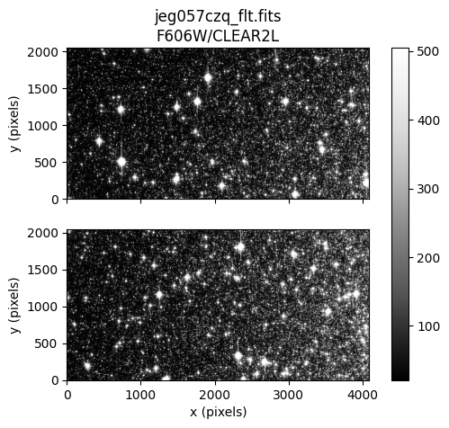
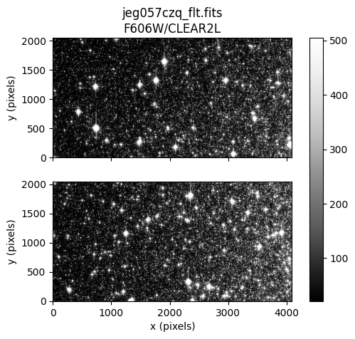

HST Exception Report - Investigate your ACS Data#
Learning Goals#
In this notebook, we will walk through steps to check your ACS data and observing logs for possible data quality problems indicated by an HST Exception Report and determine if a HOPR or Help Desk ticket needs to be filed.
By the end of this notebook, you will learn to:
Download your data
Display the data
Check data quality and any anomalies
Inspect JIF header keywords for problems
Run hst1pass on your data and evaluate the results
Determine if a HOPR or help desk ticket is warranted
Table of Contents#
Introduction
Imports
Download the Data
1. View data
2. Inspect JIF header keywords
3. Check jitter
4. Check PSF quality with hst1pass (Optional)
5. Summary & Additional Resources
About this Notebook
Citations
Introduction#
HST exception reports are sent via email to the PIs of programs that encounter observing problems during a given visit. Often times these are due to guide star acquisition failures, but there can be other causes, including unexpected safings of the telescope. Sometimes a report is sent out of an abundance of caution, in that the observing problem in question did not affect the data in the exception report. If you receive one of these reports, it is highly recommended that you inspect your data and the observing logs immediately in order to determine if your data quality is affected in any way.
If you determine your data are compromised by an observing problem, you can file a Hubble Observation Problem Report (HOPR). There is a 90-day time limit from the date the data were made available to file a HOPR.
If you have any issues with this notebook or any further questions, please contact the ACS Help Desk.
Some text and code in this notebook was adapted from the WFC3 Exception Report Checklist notebook (Kuhn 2022).
Imports#
We recommend installing the stenv Conda environment maintained by STScI. Instructions, including installation of a Conda distribution, can be found in the stenv documentation. If you already have Conda, and would prefer to create an environment with only the packages required by this notebook, please see the requirements.txt file included in this notebook’s repository.
Finally, this notebook contains an optional step to check PSF quality with a Fortran software package hst1pass. Instructions to install Fortran, download and compile hst1pass, download a PSF model, and run hst1pass are provided in Step 6. Check PSF quality with hst1pass (Optional).
For the Python-based steps in this notebook, we import:
Package Name |
Purpose |
|---|---|
|
creating list of files |
|
directory clean up |
|
setting environment variables |
|
downloading hst1pass files |
|
downloading data from MAST |
|
opening and modifying fits files |
|
reading text files |
|
normalize image for display |
|
plotting and displaying images |
import glob
import shutil
import os
import urllib
import subprocess
from astroquery.mast import Observations
from astropy.io import fits, ascii
from astropy.visualization import simple_norm
import matplotlib.pyplot as plt
Download the Data#
Here we download an example dataset with astroquery.mast. We choose visit 57 from program 16380 (PI Chiaberge), which consists of three ACS/WFC observations: JEG057010, JEG057020, and JEG057030. Each contains two exposures. The target is a region of Omega Centauri, a Milky Way globular cluster, so successful exposures contain a large population of resolved stars. We download the FLT, JIF, and JIT files, and move them into a directory named for the program ID.
To use this notebook with your data, edit the cell below with your program ID and exposure IDs (association names or IPPPSSOOTs), which are listed in your exception report.
For more information on this method of downloading data, see the documentation for astroquery.mast. This list of parameters for the query_criteria() function may be particularly useful. Other methods for downloading data include the MAST HST Search and the MAST Portal, the latter of which includes data from missions other than HST.
# Edit this cell with your info
program_id = 16380
exp_id = ['JEG057010', 'JEG057020', 'JEG057030']
data_products = ['FLT', 'JIF', 'JIT']
program_dir = '{}/p{}'.format(os.getcwd(), program_id)
# Check if directory for program exists already
try:
os.mkdir(program_dir)
except Exception:
print('Directory {} exists.\n'.format(program_dir))
# Check that all dataset names are 9 characters long
# if not, add a q to the end
datasets = ['{}q'.format(set) if len(set) == 8 else set for set in exp_id]
print('Visits to be downloaded')
print('{}\n'.format(datasets))
# Query MAST for datasets
obs_table = Observations.query_criteria(obs_id=datasets)
product_table = Observations.get_product_list(obs_table)
files_for_download = product_table['productFilename']
download_table = Observations.download_products(product_table, mrp_only=False,
productSubGroupDescription=data_products)
# For convenience move downloaded files to program dir and remove empty download dir
for file in download_table['Local Path']:
destination = os.path.join(program_dir, os.path.basename(file))
if not os.path.exists(destination):
shutil.move(file, program_dir)
else:
print(f"File {destination} already exists, skipping.")
shutil.rmtree('mastDownload')
Directory /home/runner/work/hst_notebooks/hst_notebooks/notebooks/ACS/acs_exception_report/p16380 exists.
Visits to be downloaded
['JEG057010', 'JEG057020', 'JEG057030']
Downloading URL https://mast.stsci.edu/api/v0.1/Download/file?uri=mast:HST/product/jeg057cjq_flt.fits to ./mastDownload/HST/jeg057cjq/jeg057cjq_flt.fits ...
[Done]
Downloading URL https://mast.stsci.edu/api/v0.1/Download/file?uri=mast:HST/product/jeg057chq_flt.fits to ./mastDownload/HST/jeg057chq/jeg057chq_flt.fits ...
[Done]
Downloading URL https://mast.stsci.edu/api/v0.1/Download/file?uri=mast:HST/product/jeg057coq_flt.fits to ./mastDownload/HST/jeg057coq/jeg057coq_flt.fits ...
[Done]
Downloading URL https://mast.stsci.edu/api/v0.1/Download/file?uri=mast:HST/product/jeg057021_jif.fits to ./mastDownload/HST/jeg057020/jeg057021_jif.fits ...
[Done]
Downloading URL https://mast.stsci.edu/api/v0.1/Download/file?uri=mast:HST/product/jeg057021_jit.fits to ./mastDownload/HST/jeg057020/jeg057021_jit.fits ...
[Done]
Downloading URL https://mast.stsci.edu/api/v0.1/Download/file?uri=mast:HST/product/jeg057cmq_flt.fits to ./mastDownload/HST/jeg057cmq/jeg057cmq_flt.fits ...
[Done]
Downloading URL https://mast.stsci.edu/api/v0.1/Download/file?uri=mast:HST/product/jeg057cxq_flt.fits to ./mastDownload/HST/jeg057cxq/jeg057cxq_flt.fits ...
[Done]
Downloading URL https://mast.stsci.edu/api/v0.1/Download/file?uri=mast:HST/product/jeg057czq_flt.fits to ./mastDownload/HST/jeg057czq/jeg057czq_flt.fits ...
[Done]
Downloading URL https://mast.stsci.edu/api/v0.1/Download/file?uri=mast:HST/product/jeg057011_jif.fits to ./mastDownload/HST/jeg057010/jeg057011_jif.fits ...
[Done]
Downloading URL https://mast.stsci.edu/api/v0.1/Download/file?uri=mast:HST/product/jeg057011_jit.fits to ./mastDownload/HST/jeg057010/jeg057011_jit.fits ...
[Done]
Downloading URL https://mast.stsci.edu/api/v0.1/Download/file?uri=mast:HST/product/jeg057031_jif.fits to ./mastDownload/HST/jeg057030/jeg057031_jif.fits ...
[Done]
Downloading URL https://mast.stsci.edu/api/v0.1/Download/file?uri=mast:HST/product/jeg057031_jit.fits to ./mastDownload/HST/jeg057030/jeg057031_jit.fits ...
[Done]
File /home/runner/work/hst_notebooks/hst_notebooks/notebooks/ACS/acs_exception_report/p16380/jeg057cjq_flt.fits already exists, skipping.
File /home/runner/work/hst_notebooks/hst_notebooks/notebooks/ACS/acs_exception_report/p16380/jeg057chq_flt.fits already exists, skipping.
File /home/runner/work/hst_notebooks/hst_notebooks/notebooks/ACS/acs_exception_report/p16380/jeg057coq_flt.fits already exists, skipping.
File /home/runner/work/hst_notebooks/hst_notebooks/notebooks/ACS/acs_exception_report/p16380/jeg057021_jif.fits already exists, skipping.
File /home/runner/work/hst_notebooks/hst_notebooks/notebooks/ACS/acs_exception_report/p16380/jeg057021_jit.fits already exists, skipping.
File /home/runner/work/hst_notebooks/hst_notebooks/notebooks/ACS/acs_exception_report/p16380/jeg057cmq_flt.fits already exists, skipping.
File /home/runner/work/hst_notebooks/hst_notebooks/notebooks/ACS/acs_exception_report/p16380/jeg057cxq_flt.fits already exists, skipping.
File /home/runner/work/hst_notebooks/hst_notebooks/notebooks/ACS/acs_exception_report/p16380/jeg057czq_flt.fits already exists, skipping.
File /home/runner/work/hst_notebooks/hst_notebooks/notebooks/ACS/acs_exception_report/p16380/jeg057011_jif.fits already exists, skipping.
File /home/runner/work/hst_notebooks/hst_notebooks/notebooks/ACS/acs_exception_report/p16380/jeg057011_jit.fits already exists, skipping.
File /home/runner/work/hst_notebooks/hst_notebooks/notebooks/ACS/acs_exception_report/p16380/jeg057031_jif.fits already exists, skipping.
File /home/runner/work/hst_notebooks/hst_notebooks/notebooks/ACS/acs_exception_report/p16380/jeg057031_jit.fits already exists, skipping.
1. View data#
Next, we use matplotlib.pyplot.imshow to display the SCI arrays of the FLT images. We also print the filter information for each image at the top of the plot. In some cases, a quick visual inspection can reveal poor data quality due to guiding problems. In other cases, a deeper level of analysis is needed to determine if there are problems with the data.
flt_files = sorted(glob.glob(f'p{program_id}/*flt.fits'))
for flt in flt_files:
hdu = fits.open(flt)
hdr = hdu[0].header
# Only 1 SCI extension for SBC images
if hdr['DETECTOR'] == 'SBC':
sci1 = hdu[1].data
filter1 = hdr['FILTER1']
norm = simple_norm(sci1, 'linear', percent=90)
fig, ax0 = plt.subplots(1, 1)
im = ax0.imshow(sci1, origin='lower', norm=norm, cmap='Greys_r')
ax0.set_xlabel('x (pixels)')
ax0.set_ylabel('y (pixels)')
ax0.set_title(f'{flt.split("/")[-1]}\n{filter1}')
fig.colorbar(im, ax=ax0)
# 2 SCI extensions for WFC images
elif hdr['DETECTOR'] == 'WFC':
sci1 = hdu[4].data
sci2 = hdu[1].data
filter1 = hdr['FILTER1']
filter2 = hdr['FILTER2']
norm = simple_norm(sci1, 'linear', percent=90)
fig, (ax0, ax1) = plt.subplots(2, 1, sharex=True)
im = ax0.imshow(sci1, origin='lower', norm=norm, cmap='Greys_r')
ax1.imshow(sci2, origin='lower', norm=norm, cmap='Greys_r')
ax1.set_xlabel('x (pixels)')
ax0.set_ylabel('y (pixels)')
ax1.set_ylabel('y (pixels)')
ax0.set_title(f'{flt.split("/")[-1]}\n{filter1}/{filter2}')
fig.colorbar(im, ax=(ax0, ax1))
 

In this example, the third and fourth images, jeg057cmq and jeg057coq, consist of streaked stars. This is a very clear example of a guiding failure. The other images appear normal with many bright point-like stars in the field of view.
Often, the shutter will close if a guiding failure occurs. These images will not be blank, but will contain normal detector features such as cosmic rays and hot pixels.
2. Inspect JIF header keywords#
To further investigate any guiding issues in the dataset, we inspect certain header keywords in the observing log (JIF) files. There are two JIF files, one for each association, each listing observing information for two exposures. There is a section in the zeroth extension of the JIF files that lists problem flags for the dataset, which we print and inspect first.
# Define color strings and expected JIF keyword values
colorstr_WARNING = '\033[91m' # red
colorstr_RESET = '\033[0m' # reset
jif_header_keys = {'T_GDACT': {'expected': True},
'T_ACTGSP': {'expected': True},
'T_GSFAIL': {'expected': False},
'T_SGSTAR': {'expected': False},
'T_TLMPRB': {'expected': False},
'T_NOTLM': {'expected': False},
'T_NTMGAP': {'expected': 0},
'T_TMGAP': {'expected': 0},
'T_GSGAP': {'expected': False},
'T_SLEWNG': {'expected': False},
'T_TDFDWN': {'expected': False}}
jif_list = sorted(glob.glob(f'p{program_id}/*jif.fits'))
for jif in jif_list:
with fits.open(jif) as hdu:
jif_hdr = hdu[0].header
print(jif.split('/')[-1])
# print section of JIF header with problem flags
for i in range(-18, -7):
key = list(jif_hdr.keys())[i]
# Highlight unexpected values in red
if jif_hdr[key] != jif_header_keys[key]['expected']:
print(colorstr_WARNING + repr(jif_hdr[i:i+1]) + colorstr_RESET)
else:
print(repr(jif_hdr[i:i+1]))
print('\n')
jeg057011_jif.fits
T_GDACT = T / Actual guiding mode same for all exposures
T_ACTGSP= T / Actual Guide Star Separation same in all exps.
T_GSFAIL= F / Guide star acquisition failure in any exposure
T_SGSTAR= F / Failed to single star fine lock
T_TLMPRB= F / problem with the engineering telemetry in any e
T_NOTLM = F / no engineering telemetry available in all exps.
T_NTMGAP= 0 / total number of telemetry gaps in association
T_TMGAP = 0.000000 / total duration of missing telemetry in asn. (s)
T_GSGAP = F / missing telemetry during GS acq. in any exp.
T_SLEWNG= F / Slewing occurred during observations
T_TDFDWN= F / Take Data Flag NOT on throughout observations
jeg057021_jif.fits
T_GDACT = T / Actual guiding mode same for all exposures
T_ACTGSP= T / Actual Guide Star Separation same in all exps.
T_GSFAIL= F / Guide star acquisition failure in any exposure
T_SGSTAR= F / Failed to single star fine lock
T_TLMPRB= F / problem with the engineering telemetry in any e
T_NOTLM = F / no engineering telemetry available in all exps.
T_NTMGAP= 0 / total number of telemetry gaps in association
T_TMGAP = 0.000000 / total duration of missing telemetry in asn. (s)
T_GSGAP = F / missing telemetry during GS acq. in any exp.
T_SLEWNG= F / Slewing occurred during observations
T_TDFDWN= T / Take Data Flag NOT on throughout observations
jeg057031_jif.fits
T_GDACT = T / Actual guiding mode same for all exposures
T_ACTGSP= T / Actual Guide Star Separation same in all exps.
T_GSFAIL= F / Guide star acquisition failure in any exposure
T_SGSTAR= F / Failed to single star fine lock
T_TLMPRB= F / problem with the engineering telemetry in any e
T_NOTLM = F / no engineering telemetry available in all exps.
T_NTMGAP= 0 / total number of telemetry gaps in association
T_TMGAP = 0.000000 / total duration of missing telemetry in asn. (s)
T_GSGAP = F / missing telemetry during GS acq. in any exp.
T_SLEWNG= F / Slewing occurred during observations
T_TDFDWN= F / Take Data Flag NOT on throughout observations
The only problem flag in these JIF files is that T_TDFDWN is True in the second file, which is highlighted in red to show it is different than the expected value (False). This means that the Take Data Flag was down at some point during the third and fourth exposures. If the Take Data Flag is up, that means an observation can proceed. If it goes down, the observation may stop, shutters may close, and generally, no more science data is taken until the flag goes back up. Interestingly, the shutter clearly opened during the third and fourth exposures shown in the figures above.
We may expect T_GSFAIL to be True in the second JIF file, since the TDF went down, but it is False, suggesting that the guiding problem that led to streaked images likely happened before the exposures began.
Next, we look at the header keywords in the first and subsequent extensions of the JIF file to learn more about observing problems in the individual exposures.
def further_ext(jif_file):
numexts = fits.getheader(jif_file, 0)['NEXTEND'] # number of extensions i.e. exposures
keywords = ['EXPNAME*', 'GUIDEACT*', 'GSACQ*', 'ACTGSSEP*',
'GSSEPRMS*', ' NLOSSES*',
'V2_RMS*', 'V3_RMS*', 'GSFAIL*', 'TDF-DOWN*']
for ext in range(1, numexts+1):
print("JIF Header Ext Number:", ext)
print('-'*80)
header = fits.getheader(jif_file, ext)
for keyword in keywords:
# try to display keyword because it may not be present
details = header[keyword]
if details is not None:
print(repr(details))
else:
print(f'Keyword {keyword} not found in extension {ext}')
print('\n')
for jif in jif_list:
further_ext(jif)
JIF Header Ext Number: 1
--------------------------------------------------------------------------------
EXPNAME = 'jeg057chj ' / exposure identifier
GUIDEACT= 'FINE LOCK ' / Actual Guiding mode at end of GS acquisition
GSACQ = '2021.201:11:20:29 ' / Actual time of GS Acquisition Completion
ACTGSSEP= 1092.737 / Actual Guide Star Separation (arcsec)
GSSEPRMS= 0.6 / RMS of Guide Star Separation (milli-arcsec)
V2_RMS = 1.8 / dominant guide star V2 axis RMS (mas)
V3_RMS = 1.4 / dominant guide star V3 axis RMS (mas)
JIF Header Ext Number: 2
--------------------------------------------------------------------------------
EXPNAME = 'jeg057cjj ' / exposure identifier
GUIDEACT= 'FINE LOCK ' / Actual Guiding mode at end of GS acquisition
GSACQ = '2021.201:11:20:29 ' / Actual time of GS Acquisition Completion
ACTGSSEP= 1092.737 / Actual Guide Star Separation (arcsec)
GSSEPRMS= 0.7 / RMS of Guide Star Separation (milli-arcsec)
V2_RMS = 1.9 / dominant guide star V2 axis RMS (mas)
V3_RMS = 1.5 / dominant guide star V3 axis RMS (mas)
JIF Header Ext Number: 1
--------------------------------------------------------------------------------
EXPNAME = 'jeg057cmj ' / exposure identifier
GUIDEACT= 'GYRO ' / Actual Guiding mode at end of GS acquisition
GSACQ = '2021.201:11:20:29 ' / Actual time of GS Acquisition Completion
ACTGSSEP= -32767. / Actual Guide Star Separation (arcsec)
GSSEPRMS= -32767. / RMS of Guide Star Separation (milli-arcsec)
V2_RMS = -32767. / dominant guide star V2 axis RMS (mas)
V3_RMS = -32767. / dominant guide star V3 axis RMS (mas)
TDF-DOWN= T / take-data-flag not up during entire exposure
JIF Header Ext Number: 2
--------------------------------------------------------------------------------
EXPNAME = 'jeg057coj ' / exposure identifier
GUIDEACT= 'GYRO ' / Actual Guiding mode at end of GS acquisition
GSACQ = '2021.201:11:20:29 ' / Actual time of GS Acquisition Completion
ACTGSSEP= -32767. / Actual Guide Star Separation (arcsec)
GSSEPRMS= -32767. / RMS of Guide Star Separation (milli-arcsec)
V2_RMS = -32767. / dominant guide star V2 axis RMS (mas)
V3_RMS = -32767. / dominant guide star V3 axis RMS (mas)
TDF-DOWN= T / take-data-flag not up during entire exposure
JIF Header Ext Number: 1
--------------------------------------------------------------------------------
EXPNAME = 'jeg057cxj ' / exposure identifier
GUIDEACT= 'FINE LOCK ' / Actual Guiding mode at end of GS acquisition
GSACQ = '2021.201:13:01:29 ' / Actual time of GS Acquisition Completion
ACTGSSEP= 1092.764 / Actual Guide Star Separation (arcsec)
GSSEPRMS= 0.6 / RMS of Guide Star Separation (milli-arcsec)
V2_RMS = 2.1 / dominant guide star V2 axis RMS (mas)
V3_RMS = 1.3 / dominant guide star V3 axis RMS (mas)
JIF Header Ext Number: 2
--------------------------------------------------------------------------------
EXPNAME = 'jeg057czj ' / exposure identifier
GUIDEACT= 'FINE LOCK ' / Actual Guiding mode at end of GS acquisition
GSACQ = '2021.201:13:01:29 ' / Actual time of GS Acquisition Completion
ACTGSSEP= 1092.764 / Actual Guide Star Separation (arcsec)
GSSEPRMS= 0.8 / RMS of Guide Star Separation (milli-arcsec)
V2_RMS = 2.1 / dominant guide star V2 axis RMS (mas)
V3_RMS = 1.3 / dominant guide star V3 axis RMS (mas)
Keywords from the JIF files indicate that the third and fourth exposures were taken without a lock on guide stars. The actual guiding mode, GUIDEACT, was GYRO, meaning the guiding was controlled by the telescope gyro alone, which explains the detector motion. The guide star keywords ACTGSSEP, GSSEPRMS, V2_RMS and V3_RMS are set to the nonphysical value -32767, and TDF-DOWN is True.
The other exposures had two guide stars acquired, as indicated by GUIDEACT = FINE LOCK. (When a single guide star is acquired, GUIDEACT is set to FINE/GYRO.) The guide star keywords ACTGSSEP, GSSEPRMS, V2_RMS, and V3_RMS are set to realistic, typical values.
3. Check jitter#
Sometimes the telescope may shake or move slightly during an observation, while guiding in FINE LOCK. This is called jitter. Motion of the detector in the V2, V3 coordinate system is saved in the jitter (JIT) file, and can be inspected for any extreme excursions that could affect data quality.
def jitter_plots(jit_file):
numexts = fits.getheader(jit_file, 0)['NEXTEND']
for ext in range(1, numexts+1):
jit_data = fits.getdata(jit_file, ext)
expname = fits.getheader(jit_file, ext)['EXPNAME']
plt.figure()
plt.grid(alpha=0.5)
plt.scatter(jit_data['Seconds'], jit_data['SI_V2_AVG'], 15,
alpha=0.5, marker='o', label='V2_AVG')
plt.scatter(jit_data['Seconds'], jit_data['SI_V3_AVG'], 15,
alpha=0.5, marker='o', label='V3_AVG')
plt.scatter(jit_data['Seconds'], jit_data['SI_V2_RMS'], 10,
alpha=0.5, marker='s', label='V2_RMS')
plt.scatter(jit_data['Seconds'], jit_data['SI_V3_RMS'], 10,
alpha=0.5, marker='s', label='V3_RMS')
plt.xlabel('Exposure Time [Seconds]', size=13)
plt.ylabel('Coordinate Axis [Arcsec]', size=13)
plt.title(f"Jitter File Ext Number: {ext}\n Exposure: {expname}", size=14)
plt.legend(ncol=2)
plt.minorticks_on()
jit_list = sorted(glob.glob(f'p{program_id}/*jit.fits'))
for jit in jit_list:
jitter_plots(jit)
The third and fourth exposures have jitter values pegged at a nonphysical value of 1.6e38, which is simply a placeholder for observations in which the guide stars were not acquired. The remaining exposures show a very minor amount of telescope motion, typically <3 mas, and the jitter RMS is typically <2 mas.
This further confirms there were no guide stars acquired for the third and fourth images, but the remaining images were not affected by guide star problems. The above analysis is enough to determine that a HOPR is warranted for the two images for which the telescope was guiding in GYRO mode.
If data quality is still unclear at this point, proceeding to the next section may be useful. Another avenue for futher analysis that we recommend, radial profile fitting of stars, is thoroughly covered in Step 6 in the WFC3 Exception Report Checklist notebook.
(Optional) 4. Check PSF quality with hst1pass#
If your images have at least a handful of unsaturated stars, running the PSF-fitting photometry package hst1pass on your data can provide an independent check of PSF quality, and may help you decide if a HOPR is warranted.
4.1 Environment Setup#
We first install Fortran by typing conda install -c conda-forge gfortran in the terminal. You may need to save and close this notebook, install Fortran, and then restart this notebook to ensure Fortran is active in your environment.
Next, we download the hst1pass Fortran package from https://www.stsci.edu/~jayander/HST1PASS/CODE/hst1pass/ and compile it. Alternatively, this can be done manually by downloading the latest file from the website directly, and compiling it on the command line with the command gfortran hst1pass.2025.02.14_v1h.F. This is the most recent version of the Fortran package as of the writing of this notebook, so it would be prudent to check for a newer version on the website above.
file = 'hst1pass.2025.02.14_v1h.F'
file_url = f'https://www.stsci.edu/~jayander/HST1PASS/CODE/hst1pass/{file}'
# Download the fortran file if it doesn't exist
if not os.path.exists(f'./{file}'):
print('Downloading:', file_url)
urllib.request.urlretrieve(file_url, f'./{file}')
# Compile hst1pass if it hasn't been yet
if not os.path.exists('./hst1pass.e'):
subprocess.run(["gfortran", file, "-o", "hst1pass.e"], check=True)
print('The executable hst1pass.e has been compiled')
else:
print('The executable hst1pass.e already exists')
The executable hst1pass.e already exists
Next, we download the standard library PSF for the filter used for your data. See the figure titles in step 3 above for filter information: ACS/WFC F606W in this example. Note that PSFs are not available for all ACS filters, so that may limit your ability to complete this step.
psf_name = 'STDPSF_ACSWFC_F606W_SM4.fits'
psf_url = f'https://www.stsci.edu/~jayander/HST1PASS/LIB/PSFs/STDPSFs/ACSWFC/{psf_name}'
# Download the PSF file if it doesn't exist.
if not os.path.exists(f'./{psf_name}'):
print('Downloading:', psf_url)
urllib.request.urlretrieve(psf_url, f'./{psf_name}')
4.2 Run hst1pass#
Here we run hst1pass on the FLT files with a simple set of input parameters:
HMIN = 5requires that a given pixel have no brighter pixels within 5 pixels radiusFMIN = 150requires that source contain at least 150 electrons in a 2x2 pixel boxPSFlists the PSF filePERT = 1allows the library PSF to be perturbed to find the single best PSF for a given imageOUT = xymeqspecifies the output quantities: detector coordinatesxandy, instrumental magnitude and errormande, and the quality of fit metric for the PSF fitq.
for flt in flt_files:
cmd_list = ["./hst1pass.e", "HMIN=5", "FMIN=150", "PSF=STDPSF_ACSWFC_F606W_SM4.fits", "PERT=1", "OUT=xymeq", flt]
subprocess.run(cmd_list, check=True)
------------------------------------------------
ARG0000: ./hst1pass.e
ARG0001: HMIN=5
ARG0002: FMIN=150
ARG0003: PSF=STDPSF_ACSWFC_F606W_SM4.fits
ARG0004: PERT=1
ARG0005: OUT=xymeq
ARG0006: p16380/jeg057chq_flt.fits
----------------------------------------------
OUTPUT FROM PROGRAM hst1pass: ./hst1pass.e
HMIN: 5
FMIN: 150.0
PSFFILEI: STDPSF_ACSWFC_F606W_SM4.fits
GDCFILEI: NONE
DOAPPHOT: F
DOSATD: T
NPERTs: 1
WCSMODE: AUTO
PMAX: **********
KSEL: 0
QMAX: 0.500
CMIN: -1.000
CMAX: 0.250
NIMs: 001
NIM00001 p16380/jeg057chq_flt.fits
NIMa: 1
NIMb: 1
NIMs: 1
----------------------------------------------
NIM001 CALL sub_hst2ym on image p16380/jeg057chq_flt.fits
ENTER sub_hst2xym --
FILENAME: p16380/jeg057chq_flt.fits
FILENAMu: p16380/jeg057chq_flt.fits
VERBOSE : 1
HMIN : 5
FMIN : 150
IMIN/MAX: -9999 9999
JMIN/MAX: -9999 9999
DOSATD : T
ARTSTARs: 0
LSTSTARs: 0
GDC_INP : NONE
PSF_INP : STDPSF_ACSWFC_F606W_SM4.fits
WCSMODE : AUTO
SHOW_USE: -
SHOW_FND: -
SHOW_REF: -
SHOW_SUB: -
SHOW_ART: -
SHOW_MSK: -
DQ_MASK---
SMIN: 10.00
SMAX: 1000.00
LVL: 0.00
FLAG: 0
DOAPPHOT: F
STEMu : jeg057chq
FILTu : F606W
PROPu : 16380
RDATu : 2021.55199
INSTRUME: 'ACS '
DETECTOR: 'WFC'
FLASHSTA: 'NOT PERFORMED '
FLSHCORR: 'OMIT '
SHUTRPOS: A
FLASHCUR: O
FLASHDUR: 0.0
FLASHLVL: 0.0
DARKTIME: 153.2
DARKEST : 1.8
PSFFILE : STDPSF_ACSWFC_F606W_SM4.fits
GDCFILE : NONE
DOSATD : T
HIFLAG : 76000
IDENTIFY SATURATED STARS
CALL peak_sat_NAXIS 76000
LLAC peak_sat_NAXIS 76000
GET FLUXES FOR SATURATED STARS
PSFFILE_USE: STDPSF_ACSWFC_F606W_SM4.fits
----- ---- ---- ------ ------ ------------ ------ ------ ------
LIST I J MAG SKY FLUX NSAT NAP PSFTOT
----- ---- ---- ------ ------ ------------ ------ ------ ------
00001 2771 0013 -13.96 27.9 384660.8 1 25 0.9087
00002 0480 0017 -13.59 23.2 271994.2 1 25 0.8973
00003 2442 0019 -14.09 33.5 432198.4 1 25 0.9096
00004 3737 0021 -16.58 47.4 4301783.5 40 159 0.9992
00005 0065 0025 -14.50 40.9 632282.8 1 25 0.8994
00006 0835 0028 -14.31 25.5 529644.9 2 25 0.9019
00007 3238 0028 -16.16 54.5 2901524.5 27 115 0.9916
00008 3877 0029 -14.72 39.6 771839.8 3 41 0.9501
00009 3987 0034 -14.30 40.2 525028.4 1 30 0.9170
00010 3558 0038 -18.80 161.4 33033710.0 342 837 1.0184
00013 0251 0053 -18.84 173.4 34387348.0 317 787 1.0196
00020 2000 0089 -14.04 28.5 414735.2 1 25 0.9094
00030 0015 0143 -14.89 30.0 902924.8 4 35 0.9158
00040 3729 0241 -13.74 39.4 313680.2 0 25 0.9081
00050 2547 0294 -13.84 31.4 345066.2 0 25 0.9110
00057 3496 0313 -19.32 240.0 53413100.0 547 1499 1.0190
00060 3628 0322 -14.28 53.0 516234.3 1 30 0.9253
00070 1749 0376 -13.91 24.5 364757.8 1 25 0.9101
00080 3765 0408 -14.67 53.3 736749.1 3 40 0.9427
00090 3603 0454 -16.09 48.3 2739944.5 24 109 0.9928
00100 2279 0483 -16.25 36.5 3154168.0 29 121 0.9934
00114 2794 0534 -20.56 552.6 166840240.0 1699 4450 1.0256
00200 2368 0945 -14.12 34.3 444582.5 1 25 0.9114
00300 1629 1714 -17.36 56.2 8810559.0 81 253 1.0050
00396 1482 2335 -21.26 766.7 318206624.0 2929 6517 1.0344
00400 2893 2367 -14.08 32.5 428538.4 1 25 0.9117
00500 0539 3127 -15.76 28.0 2013370.0 16 75 0.9775
00600 2311 3988 -14.65 27.7 726905.7 3 35 0.9313
----- ---- ---- ------ ------ ------------ ------ ------ ------
LIST I J MAG SKY FLUX NSAT NAP PSFTOT
----- ---- ---- ------ ------ ------------ ------ ------ ------
MEASURED SATd STARS: 606 BRIGHTEST: L0396 1482 2335 -21.26
HISTMODE: 26.53
PSFFILE_INP: STDPSF_ACSWFC_F606W_SM4.fits
PSFFILE_PRT: jeg057chq_psf.fits
CALL FIND_PSFPERT -- 1x1
CENPERT : 1
1 0.0057
NOW, GO THROUGH IMAGE AND FIND STARS
------- --------- --------- ------- ------|- -- --|-------| ----- ----- ----- -----| ----- ----- ----- -----| ------- ------- -------
NSTARS XCEN YCEN MAG SKY |M iS oS| PCEN| P02 P03 P04 P05| P06 P07 P08 P09| mSKY F2x2 F2x2-SK
------- --------- --------- ------- ------|- -- --|-------| ----- ----- ----- -----| ----- ----- ----- -----| ------- ------- -------
1 232.373 5.959 -8.649 92.9|5 4 7| 662| 559 203 242 169| 178 168 554 116| 92 1295 1295
2 1498.119 6.462 -12.916 33.1|5 11 14| 25119| 12834 7221 24396 4880| 10967 7552 4167 2560| 33 52072 52072
24 773.607 7.910 -12.939 24.9|5 11 14| 26952| 7431 22584 9105 12028| 3976 7560 7263 9227| 24 50034 50034
26 1418.179 8.179 -13.191 31.2|5 11 14| 39869| 20767 10043 20285 9870| 11434 6603 7767 4081| 31 64987 64987
85 2771.134 12.741 -13.963 42.0|9 0 0| 384660| 38398 21309 22479 49597| 14865 8321 27500 13910| 41 500050 500050
142 2442.062 19.262 -14.089 52.5|9 0 0| 432198| 40098 30373 64384 25401| 25115 18930 15535 9747| 52 561690 561690
168 3736.694 20.902 -16.584 228.3|9 0 0|4301783| 84776 84051 82731 82837| 82790 83054 83088 83029| 228 4552378 4552378
333 3557.848 37.596 -18.797 872.3|9 0 0|*******| 87021 84888 86407 86693| 87692 85098 87649 85433| 872 ******* *******
478 250.622 54.106 -18.841 853.5|9 0 0|*******| 98744 96486 98377 97860| 97002 96817 97392 96998| 853 ******* *******
778 114.077 80.891 -12.320 45.4|5 10 13| 17867| 7416 5644 5334 7414| 3870 2557 5382 2712| 45 24657 24657
1000 1876.621 101.627 -7.263 27.6|5 4 7| 174| 44 137 50 132| 54 60 81 98| 27 330 330
1639 279.675 162.526 -6.948 23.1|5 4 7| 105| 57 75 100 27| 49 95 50 66| 23 206 206
2000 3135.577 195.091 -7.517 40.1|5 3 6| 239| 83 207 124 101| 59 110 71 91| 40 383 383
2489 541.208 243.101 -6.717 32.0|5 3 6| 131| 89 72 85 52| 59 27 61 59| 31 174 174
3000 3573.777 288.985 -7.771 58.1|5 3 6| 372| 137 225 145 166| 104 114 93 103| 58 479 479
3246 3495.678 313.060 -19.319 858.3|9 0 0|*******| 83362 82415 83519 83885| 83210 82207 82794 82832| 858 ******* *******
3343 20.080 323.814 -8.585 17.4|5 5 8| 514| 241 190 170 306| 130 80 185 91| 17 790 790
4000 1097.479 390.346 -11.528 25.1|5 9 12| 6622| 6374 967 4785 1407| 4349 787 1390 463| 25 16919 16919
4152 424.009 404.767 -8.907 34.8|5 6 9| 782| 299 296 215 427| 152 120 287 176| 34 1120 1120
4977 194.681 485.929 -6.936 22.9|5 3 6| 140| 67 97 55 68| 31 51 54 54| 22 179 179
5000 2022.825 488.895 -14.566 521.2|9 0 0| 670507| 40053 67037 76859 67909| 26099 38355 23435 18671| 521 852652 852652
5445 2794.000 534.000 -20.556 0.0|9 0 0|*******| 90010 84411 87935 87937| 88348 84437 88507 84240| 0 ******* *******
5754 1567.314 567.102 -10.728 46.8|5 7 10| 4641| 2829 676 1805 1112| 1228 436 1000 379| 46 7721 7721
6000 3578.463 591.180 -7.590 45.5|5 3 6| 223| 213 68 147 97| 136 74 114 80| 45 371 371
6591 1000.418 647.590 -9.165 27.6|5 4 7| 878| 581 137 119 653| 116 66 596 94| 27 2035 2035
7000 1378.187 687.118 -8.255 18.2|5 5 8| 473| 236 116 206 133| 124 68 105 59| 18 659 659
7430 158.429 728.697 -6.573 22.3|5 3 6| 97| 78 39 40 63| 37 24 69 28| 22 157 157
8000 3894.555 781.874 -12.748 49.2|5 9 12| 22683| 5808 21154 7367 10793| 3124 6639 4615 9290| 49 47127 47127
8249 370.270 809.654 -9.282 26.4|5 7 10| 997| 611 194 258 719| 204 108 507 174| 26 2061 2061
9000 3163.455 884.903 -7.802 28.7|5 5 8| 293| 275 83 96 136| 108 51 124 42| 28 550 550
9049 725.584 891.333 -10.654 30.0|5 8 11| 3408| 967 2647 2119 733| 678 1911 569 529| 29 7784 7784
9834 488.949 971.645 -8.229 20.0|5 5 8| 408| 160 164 116 306| 58 58 125 131| 19 677 677
10000 1880.297 989.281 -8.227 24.1|5 5 8| 430| 263 93 239 97| 173 76 94 58| 24 727 727
10610 842.264 1053.010 -11.208 24.5|5 9 12| 7498| 3908 1109 2190 2252| 1544 596 1589 606| 24 10870 10870
11000 3409.608 1094.597 -10.115 52.6|5 6 9| 1823| 488 1416 583 1577| 278 487 494 1192| 52 4375 4375
11378 221.774 1134.173 -7.895 30.4|5 4 7| 331| 109 192 171 92| 87 112 105 77| 30 510 510
12000 619.486 1202.143 -9.132 21.1|5 6 9| 1198| 678 342 170 105| 358 70 149 31| 21 1649 1649
12126 334.871 1214.703 -8.018 19.4|5 5 8| 358| 105 156 88 252| 52 85 83 103| 19 608 608
12852 536.865 1296.084 -12.480 23.2|5 11 14| 23971| 6956 10214 8532 6235| 3662 4383 4244 2983| 23 34500 34500
13000 1386.824 1312.296 -13.115 35.6|5 11 14| 36835| 11564 17657 22031 7671| 7716 12230 6603 4381| 35 66654 66654
13564 229.005 1377.362 -9.942 21.6|5 8 11| 2032| 780 629 1324 323| 559 497 316 205| 21 3194 3194
14000 3423.373 1427.084 -9.471 41.6|5 6 9| 1294| 946 232 577 416| 445 162 380 148| 41 2240 2240
14294 120.284 1457.770 -11.689 22.8|5 10 13| 9098| 5588 1883 2190 5102| 1809 704 3763 1096| 22 16918 16918
15000 2873.117 1537.119 -8.836 28.0|5 6 9| 857| 340 181 367 289| 195 149 167 109| 28 1123 1123
15008 970.736 1539.096 -8.115 21.1|5 5 8| 366| 132 221 161 139| 76 136 112 86| 21 558 558
15750 751.372 1620.465 -9.229 23.4|5 7 10| 780| 591 137 686 138| 500 163 160 77| 23 1809 1809
16000 1304.850 1643.793 -8.352 31.1|5 5 8| 427| 170 233 150 271| 106 117 147 158| 31 668 668
16465 688.596 1701.366 -7.845 23.0|5 4 7| 238| 91 197 210 75| 79 129 73 73| 23 497 497
17000 3050.699 1763.620 -8.127 28.6|5 5 8| 320| 98 231 147 271| 70 104 118 220| 28 716 716
17140 111.301 1781.610 -12.495 24.2|5 11 14| 16885| 10161 3518 3567 13195| 3263 1141 9188 2673| 24 35784 35784
17862 83.912 1862.930 -11.432 19.6|5 10 13| 7921| 2638 3451 2283 3490| 1390 1229 1835 1368| 19 11409 11409
18000 3919.443 1879.404 -10.017 26.9|5 6 9| 1682| 1439 274 1254 299| 1099 257 360 115| 26 4028 4028
18522 457.785 1943.610 -7.551 24.3|5 4 7| 176| 81 116 89 174| 68 80 64 98| 24 326 326
19000 184.012 2002.166 -7.311 20.9|5 4 7| 219| 74 73 107 82| 72 40 45 36| 20 257 257
19189 198.036 2025.331 -9.723 22.4|5 7 10| 1999| 51 1492 478 397| 36 971 21 121| 22 4023 4023
19754 628.935 2105.581 -12.494 35.6|5 10 13| 19317| 6407 7764 3629 13794| 2395 1718 6575 5779| 35 34027 34027
20000 854.084 2135.274 -9.927 31.9|5 7 10| 1728| 780 501 1335 478| 540 456 423 287| 31 2898 2898
20413 131.214 2186.466 -7.206 22.9|5 4 7| 128| 75 50 45 124| 53 32 88 50| 22 186 186
21000 2745.119 2259.515 -10.476 28.6|5 8 11| 3330| 1269 733 542 2579| 336 213 1234 702| 28 6208 6208
21051 696.022 2268.300 -8.623 48.4|5 5 8| 747| 202 139 418 191| 219 145 120 130| 48 1063 1063
21591 1482.000 2335.000 -21.257 0.0|9 0 0|*******|102175103010103484104031|103440101220103798101909| 0 ******* *******
21711 364.188 2348.821 -8.455 28.2|5 5 8| 450| 223 129 162 243| 125 77 179 89| 28 581 581
22000 2347.759 2391.142 -9.142 19.9|5 6 9| 888| 282 488 480 305| 168 355 196 179| 19 1561 1561
22299 358.696 2430.006 -11.326 23.4|5 10 13| 6714| 2101 4413 2608 2243| 1072 1932 1662 1475| 23 11456 11456
22888 1575.411 2510.366 -7.351 41.4|5 4 7| 163| 120 43 67 162| 74 53 145 60| 41 309 309
23000 2340.813 2524.620 -8.680 50.3|5 4 7| 562| 193 315 196 445| 141 116 189 264| 50 998 998
23519 447.103 2591.683 -10.891 18.5|5 9 12| 4918| 1854 1315 930 2691| 592 431 1655 765| 18 7651 7651
24000 3163.247 2656.124 -10.584 44.9|5 7 10| 3793| 2057 707 1819 965| 1075 440 904 433| 44 6329 6329
24135 87.517 2673.250 -9.980 20.0|5 8 11| 1471| 514 1412 991 450| 269 1056 408 418| 19 3720 3720
24785 253.449 2753.866 -11.803 49.9|5 10 13| 9323| 7602 1319 2666 3545| 2510 536 3872 932| 49 16361 16361
25000 3890.076 2778.883 -11.240 41.1|5 6 9| 7132| 2841 1947 2266 2911| 1261 860 1855 1054| 41 9841 9841
25418 422.987 2835.340 -8.025 24.1|5 4 7| 298| 136 124 240 106| 116 109 101 67| 24 476 476
26000 864.421 2910.720 -7.809 27.1|5 5 8| 264| 206 55 82 152| 86 28 138 54| 27 464 464
26039 315.673 2916.145 -12.128 23.7|5 11 14| 13212| 4189 9216 6360 3875| 2375 5134 3380 2575| 23 25570 25570
26598 107.359 2996.970 -7.193 22.6|5 4 7| 148| 114 39 91 72| 47 31 65 39| 22 213 213
27000 3458.323 3047.725 -9.391 44.5|5 6 9| 1199| 828 222 310 672| 249 129 512 202| 44 2272 2272
27203 346.269 3077.823 -10.902 31.3|5 9 12| 4608| 2712 898 1159 2045| 884 345 1519 549| 31 7276 7276
27801 36.703 3159.055 -9.132 24.7|5 6 9| 815| 300 532 407 308| 153 280 249 217| 24 1390 1390
28000 3464.313 3183.922 -8.550 92.5|5 4 7| 596| 408 178 282 312| 237 139 278 168| 92 805 805
28416 1230.027 3240.095 -12.363 46.5|5 10 13| 19100| 7412 5859 8563 5280| 3890 3208 4515 2575| 46 25630 25630
29000 2395.364 3317.066 -11.905 27.7|5 10 13| 11852| 8624 1786 4980 3345| 3729 1012 3374 1200| 27 21575 21575
29025 2668.436 3320.866 -9.361 25.5|5 7 10| 1128| 961 153 309 448| 292 97 427 151| 25 2084 2084
29621 747.401 3402.398 -10.689 22.2|5 8 11| 2877| 2372 425 2569 657| 1870 402 713 270| 22 7235 7235
30000 3741.881 3453.223 -16.094 151.8|9 0 0|2739832| 86465 85248 89425 89140| 84754 85698 85170 78189| 151 3000502 3000502
30206 563.928 3483.317 -6.897 42.0|5 3 6| 158| 87 75 115 62| 77 81 75 73| 42 185 185
30788 3281.273 3564.374 -8.296 31.6|5 5 8| 389| 275 121 339 110| 211 94 109 77| 31 822 822
31000 3216.407 3593.990 -9.946 30.8|5 6 9| 1742| 1508 375 722 629| 633 170 692 222| 30 3153 3153
31374 582.046 3645.130 -7.365 21.9|5 4 7| 193| 103 74 102 73| 62 70 73 53| 21 234 234
31971 30.692 3725.878 -7.911 20.8|5 5 8| 265| 112 202 101 158| 51 87 77 93| 20 430 430
32000 2125.945 3729.817 -6.765 23.7|5 3 6| 146| 51 73 44 70| 36 33 50 27| 23 154 154
32546 358.342 3806.762 -7.245 38.7|5 4 7| 204| 138 54 62 100| 63 41 103 74| 38 294 294
33000 3265.012 3870.850 -7.558 25.8|5 4 7| 295| 98 90 83 125| 64 53 88 66| 25 348 348
33105 533.962 3888.149 -8.831 24.4|5 5 8| 571| 220 219 373 205| 152 167 200 97| 24 864 864
33649 1379.837 3968.730 -11.381 26.4|5 9 12| 7221| 2121 3581 1498 4261| 911 940 2131 1950| 26 12344 12344
34000 1802.632 4021.958 -8.929 15.6|5 6 9| 1417| 144 580 230 338| 49 135 71 207| 15 2170 2170
34191 1199.807 4049.917 -8.858 26.2|5 6 9| 637| 219 414 213 340| 170 138 180 173| 26 1038 1038
------- --------- --------- ------- ------|- -- --|-------| ----- ----- ----- -----| ----- ----- ----- -----| ------- ------- -------
NSTARS XCEN YCEN MAG SKY |M iS oS| PCEN| P02 P03 P04 P05| P06 P07 P08 P09| mSKY F2x2 F2x2-SK
------- --------- --------- ------- ------|- -- --|-------| ----- ----- ----- -----| ----- ----- ----- -----| ------- ------- -------
-----------------------------------------
FINDING STATISTICS
-----------------------------------------
Y NPIX %PIX EXPLANATION
1 28602 0.170% ..1..not on chip....
2 15256743 90.937% ..2..not loc max....
3 1263856 7.533% ..3..h < hmax.......
4 94526 0.563% ..4..flux too low...
5 0 0.000% ..5..below mask thr.
6 0 0.000% ..6..out of bounds..
7 2540 0.015% ..7..loflag issues..
8 0 0.000% ..8..saturated......
9 719 0.004% ..9..not contig sat.
10 0 0.000% .10..not loc sat max
11 0 0.000% .11..sat weirdness..
12 13898 0.083% .12..pk but not qsel
13 26 0.000% .13..pk too peaky...
14 7 0.000% .14..satd CR........
-----------------------------------------
15 33889 0.202% .15..good unsat.....
16 590 0.004% .16..good satd......
#
#
#=======================================
# LUMINOSITY FUNCTION EXTRACTED
#
# MAG LFe CUMe LFe/s CUMe/s
#-------- ----- ------ ------- ------
# LF -21 2 2 0 0
# LF -20 5 7 0 0
# LF -19 19 26 0 0
# LF -18 17 43 0 0
# LF -17 57 100 0 0
# LF -16 60 160 1 1
# LF -15 158 318 3 4
# LF -14 794 1112 10 14
# LF -13 2002 3114 20 34
# LF -12 3304 6418 45 79
# LF -11 3865 10283 51 130
# LF -10 4250 14533 103 233
# LF -9 5994 20527 382 615
# LF -8 8555 29082 1412 2027
# LF -7 5334 34416 2786 4813
# LF -6 63 34479 3771 8584
# LF -5 0 34479 4072 12656
# LF -4 0 34479 4821 17477
# LF -3 0 34479 7860 25337
# LF -2 0 34479 7652 32989
# LF -1 0 34479 1490 34479
#-------- ----- ------ ------- ------
#
NIM
---> rDAT_N: 2021.55200 1
NIM: 1 / 1
---> NLISTs = 1 jeg057chq_flt
---> NLIST = 1 NITEMs = 5 xymeq
OUTPUT LISTS...
NLISTs: 1
SETUPa--- 50
SETUPb --- 34479
--------------
FIND SPACING:
--------------
F01 (06:14) u -- u ref-frame
F02 (06:14) v -- v ref-frame
F03 (02:08) M -- instl mag (1000s)
F04 (03:11) x -- raw detector x pos
F05 (03:11) y -- raw detector y pos
F06 (02:08) m -- instl mag
F07 (02:02) k -- detector chip no
F08 (03:11) X -- dist-cor x posn
F09 (03:11) Y -- dist-cor y posn
F10 (01:02) h -- local isolation
F11 (04:08) H -- list-based isolatn
F12 (05:16) r -- RA (deg)
F13 (05:16) d -- Dec (deg)
F14 (05:16) R -- RA (deg; adjustd)
F15 (05:16) D -- Dec (deg; adjustd)
F16 (03:06) i -- peak pixel column
F17 (03:06) j -- peak pixel row
F18 (04:12) p -- peak pixel value
F19 (06:12) q -- quality of fit
F20 (07:12) c -- chisq of fit
F21 (05:14) U -- u ref-frame (corr)
F22 (05:14) V -- v ref-frame (corr)
F23 (01:01) k -- chip number
F24 (01:02) K -- chip number (w/K)
F25 (04:10) s -- sky value
F26 (04:10) S -- CTE bkgd value
F27 (04:06) n -- nsat pixels
F28 (01:10) t -- rdat observation
F29 (01:07) C -- centpix frac resid
F30 (01:06) o -- other flux
F31 (01:06) O -- max other flux
F32 (01:08) 1 -- diam=1 PBAP (1x1)
F33 (01:08) 2 -- diam=2 PBAP (2x2)
F34 (01:08) 3 -- diam=3 PBAP (3x3)
F35 (01:08) 4 -- diam=4 PBAP flux
F36 (01:08) 5 -- diam=5 PBAP flux
F37 (01:08) 6 -- diam=6 PBAP flux
F38 (01:08) 7 -- diam=7 PBAP flux
F39 (01:08) 8 -- diam=8 PBAP flux
F40 (01:08) 9 -- diam=9 PBAP flux
F41 (02:08) 0 -- PBAPsky: 5.5<r<8.5
F42 (01:10) z -- flux (can be neg)
F43 (01:08) N -- star number
F44 (02:08) w -- dist-corr inst mag
F45 (02:08) W -- w, zeropointed
F46 (01:05) e -- frac error scale
F47 (02:08) f -- central PSF value
F48 (02:08) F -- central PSF max
F49 (01:10) P -- 2x2 flux for fndng
F50 (06:10) E -- effective sky rad
*********************
***
*** NLISTs: 1
***
*********************
NLIST01: 5 jeg057chq_flt.xymeq
Note: The following floating-point exceptions are signalling: IEEE_INVALID_FLAG IEEE_DIVIDE_BY_ZERO IEEE_DENORMAL
------------------------------------------------
ARG0000: ./hst1pass.e
ARG0001: HMIN=5
ARG0002: FMIN=150
ARG0003: PSF=STDPSF_ACSWFC_F606W_SM4.fits
ARG0004: PERT=1
ARG0005: OUT=xymeq
ARG0006: p16380/jeg057cjq_flt.fits
----------------------------------------------
OUTPUT FROM PROGRAM hst1pass: ./hst1pass.e
HMIN: 5
FMIN: 150.0
PSFFILEI: STDPSF_ACSWFC_F606W_SM4.fits
GDCFILEI: NONE
DOAPPHOT: F
DOSATD: T
NPERTs: 1
WCSMODE: AUTO
PMAX: **********
KSEL: 0
QMAX: 0.500
CMIN: -1.000
CMAX: 0.250
NIMs: 001
NIM00001 p16380/jeg057cjq_flt.fits
NIMa: 1
NIMb: 1
NIMs: 1
----------------------------------------------
NIM001 CALL sub_hst2ym on image p16380/jeg057cjq_flt.fits
ENTER sub_hst2xym --
FILENAME: p16380/jeg057cjq_flt.fits
FILENAMu: p16380/jeg057cjq_flt.fits
VERBOSE : 1
HMIN : 5
FMIN : 150
IMIN/MAX: -9999 9999
JMIN/MAX: -9999 9999
DOSATD : T
ARTSTARs: 0
LSTSTARs: 0
GDC_INP : NONE
PSF_INP : STDPSF_ACSWFC_F606W_SM4.fits
WCSMODE : AUTO
SHOW_USE: -
SHOW_FND: -
SHOW_REF: -
SHOW_SUB: -
SHOW_ART: -
SHOW_MSK: -
DQ_MASK---
SMIN: 10.00
SMAX: 1000.00
LVL: 0.00
FLAG: 0
DOAPPHOT: F
STEMu : jeg057cjq
FILTu : F606W
PROPu : 16380
RDATu : 2021.55201
INSTRUME: 'ACS '
DETECTOR: 'WFC'
FLASHSTA: 'NOT PERFORMED '
FLSHCORR: 'OMIT '
SHUTRPOS: B
FLASHCUR: O
FLASHDUR: 0.0
FLASHLVL: 0.0
DARKTIME: 153.2
DARKEST : 1.8
PSFFILE : STDPSF_ACSWFC_F606W_SM4.fits
GDCFILE : NONE
DOSATD : T
HIFLAG : 76000
IDENTIFY SATURATED STARS
CALL peak_sat_NAXIS 76000
LLAC peak_sat_NAXIS 76000
GET FLUXES FOR SATURATED STARS
PSFFILE_USE: STDPSF_ACSWFC_F606W_SM4.fits
----- ---- ---- ------ ------ ------------ ------ ------ ------
LIST I J MAG SKY FLUX NSAT NAP PSFTOT
----- ---- ---- ------ ------ ------------ ------ ------ ------
00001 2771 0013 -13.97 26.2 386213.2 1 25 0.9087
00002 2442 0019 -14.09 31.8 432900.7 1 25 0.9096
00003 3737 0021 -16.58 45.7 4298325.0 40 154 0.9943
00004 0065 0025 -14.51 39.2 637780.4 1 25 0.8994
00005 0835 0028 -14.32 24.5 532823.2 2 30 0.9096
00006 3238 0028 -16.16 51.8 2903898.5 27 115 0.9916
00007 3877 0029 -14.72 38.2 770076.1 3 40 0.9490
00008 3987 0034 -14.30 38.1 526871.3 1 30 0.9170
00009 3558 0038 -18.80 160.9 33030586.0 340 836 1.0184
00010 3366 0040 -14.17 50.3 466140.7 1 25 0.9082
00013 0251 0053 -18.84 173.3 34426968.0 318 778 1.0167
00020 0187 0090 -18.69 150.6 29861326.0 279 701 1.0208
00030 3306 0134 -13.88 44.3 355387.4 0 25 0.9090
00040 2880 0227 -14.31 34.6 531552.6 2 30 0.9182
00050 3692 0281 -14.24 43.1 498258.8 1 30 0.9176
00059 3496 0313 -19.32 240.7 53407532.0 547 1503 1.0190
00060 0213 0316 -14.49 24.7 623964.4 2 30 0.9136
00070 3575 0365 -14.37 57.5 558014.8 2 30 0.9174
00080 0770 0407 -13.85 25.3 346845.4 1 25 0.9058
00090 3767 0445 -14.37 44.2 559948.6 1 30 0.9251
00100 3291 0481 -15.15 39.1 1146961.9 7 55 0.9688
00116 2794 0534 -20.56 557.4 166800144.0 1702 4494 1.0256
00200 1068 0930 -13.95 29.5 379538.9 1 25 0.9111
00300 3174 1703 -14.28 31.7 514089.4 1 25 0.9084
00397 1482 2335 -21.26 768.6 318862144.0 2940 6568 1.0344
00400 0109 2356 -15.64 30.1 1809652.4 13 64 0.9748
00500 0539 3127 -15.76 27.0 2014976.5 16 70 0.9756
00600 3266 3943 -14.75 31.0 791116.4 4 36 0.9429
----- ---- ---- ------ ------ ------------ ------ ------ ------
LIST I J MAG SKY FLUX NSAT NAP PSFTOT
----- ---- ---- ------ ------ ------------ ------ ------ ------
MEASURED SATd STARS: 608 BRIGHTEST: L0397 1482 2335 -21.26
HISTMODE: 25.59
PSFFILE_INP: STDPSF_ACSWFC_F606W_SM4.fits
PSFFILE_PRT: jeg057cjq_psf.fits
CALL FIND_PSFPERT -- 1x1
CENPERT : 1
1 0.0061
NOW, GO THROUGH IMAGE AND FIND STARS
------- --------- --------- ------- ------|- -- --|-------| ----- ----- ----- -----| ----- ----- ----- -----| ------- ------- -------
NSTARS XCEN YCEN MAG SKY |M iS oS| PCEN| P02 P03 P04 P05| P06 P07 P08 P09| mSKY F2x2 F2x2-SK
------- --------- --------- ------- ------|- -- --|-------| ----- ----- ----- -----| ----- ----- ----- -----| ------- ------- -------
1 671.390 5.977 -6.607 22.3|5 3 6| 107| 87 32 62 59| 39 18 49 39| 22 158 158
2 1498.091 6.436 -12.919 33.8|5 11 14| 26307| 12666 7849 23805 5139| 10391 7850 4225 2723| 33 51747 51747
28 773.564 7.883 -12.940 27.6|5 11 14| 26158| 7207 24027 8350 12328| 3649 7600 7080 10044| 27 51967 51967
30 1418.138 8.150 -13.186 30.7|5 11 14| 41033| 19586 11062 19484 10581| 10402 6798 7662 4454| 30 62731 62731
88 2771.111 12.708 -13.967 39.5|9 0 0| 386213| 37052 22033 22274 51624| 13606 8506 27690 15085| 39 502478 502478
145 2442.038 19.233 -14.091 49.3|9 0 0| 432900| 39319 32290 65045 26615| 23497 18925 15658 10468| 49 560660 560660
172 3736.689 20.894 -16.583 216.3|9 0 0|4298325| 84791 84064 82700 82914| 82831 82974 83065 83053| 216 4548994 4548994
339 3557.838 37.585 -18.797 876.1|9 0 0|*******| 87034 84816 86368 86729| 87740 85104 87638 85423| 876 ******* *******
484 250.620 54.067 -18.842 852.7|9 0 0|*******| 98734 96468 98454 97865| 96996 96854 97350 97007| 852 ******* *******
786 114.024 80.865 -12.328 43.1|5 10 13| 18297| 7027 6381 5072 8034| 3439 2678 5146 3049| 43 24929 24929
1000 2929.287 100.875 -7.674 22.7|5 4 7| 266| 182 73 98 122| 64 51 99 78| 22 407 407
1667 279.616 162.591 -7.029 25.8|5 4 7| 122| 60 86 111 30| 60 106 42 37| 25 236 236
2000 4034.631 191.558 -11.226 49.9|5 8 11| 5077| 1334 3905 1347 4570| 626 1132 1404 3321| 49 12816 12816
2524 541.051 243.175 -6.828 25.1|5 3 6| 142| 69 54 81 47| 55 42 62 44| 25 170 170
3000 3758.073 285.815 -11.040 33.4|5 7 10| 6221| 2256 1695 1619 2913| 1027 694 1539 1065| 33 9002 9002
3288 3495.669 313.038 -19.319 894.8|9 0 0|*******| 83399 82406 83564 83951| 83228 82193 82746 82904| 894 ******* *******
3386 20.035 323.777 -8.525 18.1|5 6 9| 513| 214 177 136 292| 114 77 176 131| 18 754 754
4000 3591.495 384.306 -7.203 46.5|5 3 6| 165| 80 162 131 74| 62 129 65 86| 46 297 297
4209 424.024 404.756 -8.954 29.5|5 6 9| 842| 306 297 195 447| 166 112 264 158| 29 1181 1181
5000 2918.360 481.216 -11.662 40.6|5 8 11| 9694| 6739 1578 5081 2051| 3761 1045 1908 764| 40 19207 19207
5050 194.573 485.946 -7.024 20.1|5 4 7| 153| 49 123 52 54| 32 58 47 65| 20 229 229
5522 2794.000 534.000 -20.555 0.0|9 0 0|*******| 89971 84477 87963 87940| 88284 84436 88453 84303| 0 ******* *******
5827 1024.640 566.632 -8.062 58.7|5 3 6| 444| 88 275 81 301| 76 104 95 237| 58 906 906
6000 1968.748 582.712 -9.806 30.7|5 7 10| 1802| 419 1060 390 1123| 231 326 457 624| 30 3506 3506
6694 1069.649 648.200 -11.114 26.3|5 9 12| 5841| 1453 4126 2761 1382| 936 2183 1018 940| 26 11462 11462
7000 263.907 677.066 -10.246 18.6|5 8 11| 2877| 938 1167 1021 886| 548 563 578 431| 18 3808 3808
7549 1293.435 728.767 -11.824 27.0|5 10 13| 10337| 8471 1388 2367 5327| 2347 671 4925 1004| 26 22174 22174
8000 57.477 771.134 -7.813 26.9|5 4 7| 234| 232 69 130 92| 131 44 113 53| 26 424 424
8350 370.210 809.636 -9.330 21.9|5 7 10| 997| 562 263 255 760| 216 110 491 186| 21 1961 1961
9000 1627.620 874.112 -7.410 34.3|5 3 6| 213| 83 176 105 103| 56 97 66 78| 34 321 321
9160 475.471 891.415 -8.993 27.7|5 5 8| 581| 529 124 499 121| 424 99 160 76| 27 1340 1340
9958 488.927 971.618 -8.186 24.1|5 5 8| 394| 152 167 109 317| 74 70 128 148| 24 709 709
10000 1176.705 975.723 -6.912 16.0|5 3 6| 127| 52 89 33 82| 19 48 51 59| 16 213 213
10724 842.220 1052.994 -11.206 25.1|5 10 13| 7780| 3675 1247 2183 2401| 1433 598 1564 700| 25 11058 11058
11000 137.115 1083.292 -11.368 26.8|5 10 13| 6862| 3061 1928 3842 1485| 1882 1347 1276 666| 26 9552 9552
11483 609.834 1133.737 -11.434 27.4|5 8 11| 8055| 2194 3859 1892 5116| 982 1037 2085 2245| 27 14655 14655
12000 3925.250 1189.408 -7.854 38.4|5 4 7| 345| 166 72 233 91| 179 72 73 47| 38 611 611
12235 334.748 1214.740 -8.005 17.3|5 5 8| 335| 96 193 81 237| 75 77 88 124| 17 641 641
12956 536.807 1296.071 -12.480 22.4|5 11 14| 23505| 6407 11352 8034 6333| 3472 4756 4185 3487| 22 34995 34995
13000 2041.124 1300.875 -10.020 124.0|5 4 7| 2149| 1128 643 714 1023| 547 443 714 555| 124 3014 3014
13686 228.956 1377.354 -9.963 21.2|5 8 11| 2045| 724 710 1312 390| 551 534 306 208| 21 3257 3257
14000 2426.218 1414.083 -9.133 33.9|5 5 8| 1041| 542 228 446 356| 285 167 263 126| 33 1504 1504
14419 120.217 1457.765 -11.698 25.3|5 10 13| 9489| 5062 2154 2292 5341| 1739 827 3674 1327| 25 16727 16727
15000 3832.126 1520.086 -7.886 38.9|5 4 7| 329| 167 124 169 142| 131 88 108 87| 38 400 400
15158 970.665 1539.145 -8.183 22.5|5 5 8| 377| 101 261 171 138| 92 162 91 93| 22 620 620
15896 751.291 1620.482 -9.206 20.7|5 7 10| 837| 523 151 740 140| 474 168 156 75| 20 1861 1861
16000 1632.744 1629.678 -7.551 33.2|5 4 7| 194| 86 126 109 169| 65 89 80 103| 33 295 295
16618 688.500 1701.381 -7.822 25.7|5 5 8| 233| 114 207 191 78| 94 150 64 72| 25 478 478
17000 1644.512 1744.473 -8.421 79.6|5 4 7| 370| 166 338 350 174| 173 348 139 198| 79 724 724
17312 111.239 1781.609 -12.486 26.1|5 11 14| 17257| 9178 4152 3573 13561| 3232 1136 8558 3048| 26 34583 34583
18000 395.676 1862.254 -9.516 25.2|5 7 10| 1228| 367 845 667 334| 255 497 226 209| 25 2306 2306
18012 83.846 1862.923 -11.463 21.3|5 10 13| 8006| 2603 4057 2366 3508| 1279 1396 1921 1560| 21 12032 12032
18685 457.746 1943.682 -7.522 27.8|5 4 7| 181| 77 149 98 172| 58 71 65 94| 27 372 372
19000 574.278 1982.799 -8.933 43.0|5 5 8| 711| 452 167 249 438| 212 114 304 126| 43 1200 1200
19356 747.197 2024.562 -8.705 58.5|5 4 7| 755| 203 88 199 483| 160 80 258 107| 58 1045 1045
19902 628.878 2105.586 -12.484 35.8|5 10 13| 19024| 5833 8711 3722 13595| 2228 1799 6404 6227| 35 35110 35110
20000 2610.799 2118.495 -8.783 31.9|5 5 8| 535| 174 289 170 533| 117 116 207 291| 31 1062 1062
20535 131.259 2186.561 -7.119 26.0|5 4 7| 146| 86 43 61 123| 32 36 75 37| 25 216 216
21000 2159.312 2245.971 -12.579 39.3|5 11 14| 20713| 13810 4354 8531 7559| 6162 2413 6762 2795| 39 33912 33912
21158 965.907 2267.972 -11.360 40.1|5 9 12| 6765| 2420 2672 2660 2257| 1225 1240 1855 1438| 40 8608 8608
21701 1482.000 2335.000 -21.259 0.0|9 0 0|*******|102284103135103526104142|103575101175103815101967| 0 ******* *******
21813 364.114 2348.893 -8.477 25.8|5 5 8| 474| 207 152 189 214| 120 72 169 108| 25 523 523
22000 4047.325 2373.629 -10.901 23.9|5 8 11| 4280| 2842 807 981 2726| 764 369 2144 673| 23 8777 8777
22408 358.627 2430.023 -11.331 18.6|5 10 13| 6417| 1933 4878 2577 2194| 1022 2089 1663 1534| 18 11739 11739
22990 1575.488 2510.379 -7.331 43.7|5 4 7| 167| 126 52 58 141| 51 54 150 68| 43 297 297
23000 2256.601 2511.863 -10.724 24.5|5 8 11| 3605| 888 2921 1160 1665| 441 1028 956 1283| 24 6653 6653
23624 447.045 2591.672 -10.898 21.3|5 10 13| 4947| 1718 1449 980 2820| 564 494 1558 900| 21 7465 7465
24000 3006.810 2643.797 -8.941 27.3|5 6 9| 923| 224 436 243 435| 105 152 231 220| 27 1404 1404
24237 87.431 2673.244 -9.995 19.0|5 8 11| 1544| 1288 224 1178 450| 959 149 498 187| 18 3746 3746
24878 253.377 2753.866 -11.799 51.4|5 10 13| 9882| 7034 1564 2765 3808| 2480 645 3691 1065| 51 16344 16344
25000 2821.275 2769.647 -13.511 73.7|5 9 12| 48417| 27414 8792 10018 34127| 8798 3539 23073 7557| 73 99737 99737
25512 422.960 2835.200 -8.100 26.3|5 4 7| 367| 129 139 229 148| 93 114 96 64| 26 545 545
26000 272.231 2898.047 -11.948 32.8|5 10 13| 12044| 6735 2515 5206 3668| 2970 1355 3318 1277| 32 18444 18444
26134 315.615 2916.147 -12.124 21.0|5 11 14| 12755| 4007 9757 6138 3745| 2162 5678 3253 2757| 21 26005 26005
26689 107.165 2997.072 -7.224 20.9|5 4 7| 162| 81 42 86 88| 69 51 65 44| 20 188 188
27000 735.566 3037.790 -8.918 21.2|5 6 9| 626| 197 619 165 364| 92 194 201 275| 21 1305 1305
27298 346.211 3077.836 -10.887 31.3|5 9 12| 4812| 2402 1005 1282 2001| 813 354 1463 602| 31 7076 7076
27900 36.617 3159.069 -9.096 26.3|5 6 9| 723| 260 587 367 298| 158 334 228 237| 26 1376 1376
28000 2627.244 3170.531 -7.366 31.6|5 4 7| 165| 128 58 69 156| 51 65 107 76| 31 295 295
28514 1229.981 3240.115 -12.351 50.5|5 10 13| 18527| 6884 6317 8769 4996| 3804 3619 4534 2773| 50 26146 26146
29000 2203.927 3304.111 -13.157 39.6|5 11 14| 41264| 13795 15575 18964 11668| 7662 8368 8722 5989| 39 60386 60386
29128 2668.378 3320.879 -9.329 26.9|5 7 10| 1187| 855 193 340 439| 280 93 456 137| 26 2091 2091
29712 747.348 3402.410 -10.713 21.1|5 9 12| 3105| 2217 477 2821 711| 1823 442 751 313| 21 7435 7435
30000 3064.361 3439.907 -15.647 103.7|9 0 0|1814391| 86830 55985 88449 87246| 85472 27118 87301 37984| 103 2075667 2075667
30300 590.890 3482.681 -12.913 56.2|5 11 14| 29710| 8887 12891 5452 18704| 3623 3134 9009 7550| 56 50498 50498
30891 2917.588 3563.499 -11.358 70.5|5 8 11| 5394| 1368 4493 1138 5272| 684 840 1688 4144| 70 14876 14876
31000 1143.981 3579.503 -7.005 17.5|5 4 7| 138| 39 61 23 122| 27 28 78 44| 17 220 220
31482 582.047 3645.106 -7.478 23.2|5 4 7| 231| 106 83 121 91| 77 58 61 51| 23 303 303
32000 2093.837 3714.925 -8.380 27.8|5 5 8| 463| 117 208 222 223| 75 140 145 95| 27 678 678
32078 30.653 3725.867 -7.839 22.3|5 5 8| 237| 99 216 96 136| 58 79 91 102| 22 418 418
32649 358.255 3806.799 -7.317 39.3|5 3 6| 200| 126 77 70 116| 83 34 91 51| 39 238 238
33000 637.833 3857.271 -8.082 27.1|5 5 8| 324| 135 185 244 120| 93 141 90 87| 27 598 598
33215 533.890 3888.254 -8.812 25.4|5 5 8| 574| 197 239 443 169| 140 212 158 117| 25 1038 1038
33754 1379.794 3968.757 -11.381 22.6|5 9 12| 7136| 2092 3867 1580 3985| 879 1067 2007 2080| 22 12359 12359
34000 3917.619 4002.620 -8.907 22.5|5 6 9| 607| 161 487 154 477| 105 133 199 352| 22 1360 1360
34301 1199.786 4049.957 -8.873 27.5|5 6 9| 640| 226 419 234 305| 164 151 189 172| 27 955 955
------- --------- --------- ------- ------|- -- --|-------| ----- ----- ----- -----| ----- ----- ----- -----| ------- ------- -------
NSTARS XCEN YCEN MAG SKY |M iS oS| PCEN| P02 P03 P04 P05| P06 P07 P08 P09| mSKY F2x2 F2x2-SK
------- --------- --------- ------- ------|- -- --|-------| ----- ----- ----- -----| ----- ----- ----- -----| ------- ------- -------
-----------------------------------------
FINDING STATISTICS
-----------------------------------------
Y NPIX %PIX EXPLANATION
1 28602 0.170% ..1..not on chip....
2 15249084 90.892% ..2..not loc max....
3 1271390 7.578% ..3..h < hmax.......
4 98669 0.588% ..4..flux too low...
5 0 0.000% ..5..below mask thr.
6 0 0.000% ..6..out of bounds..
7 2622 0.016% ..7..loflag issues..
8 0 0.000% ..8..saturated......
9 723 0.004% ..9..not contig sat.
10 0 0.000% .10..not loc sat max
11 0 0.000% .11..sat weirdness..
12 9686 0.058% .12..pk but not qsel
13 25 0.000% .13..pk too peaky...
14 4 0.000% .14..satd CR........
-----------------------------------------
15 33997 0.203% .15..good unsat.....
16 594 0.004% .16..good satd......
#
#
#=======================================
# LUMINOSITY FUNCTION EXTRACTED
#
# MAG LFe CUMe LFe/s CUMe/s
#-------- ----- ------ ------- ------
# LF -21 2 2 0 0
# LF -20 5 7 0 0
# LF -19 19 26 0 0
# LF -18 17 43 0 0
# LF -17 57 100 0 0
# LF -16 60 160 1 1
# LF -15 158 318 3 4
# LF -14 798 1116 10 14
# LF -13 1993 3109 20 34
# LF -12 3301 6410 45 79
# LF -11 3892 10302 51 130
# LF -10 4188 14490 103 233
# LF -9 5901 20391 381 614
# LF -8 8624 29015 1412 2026
# LF -7 5509 34524 2781 4807
# LF -6 67 34591 3786 8593
# LF -5 0 34591 4053 12646
# LF -4 0 34591 4771 17417
# LF -3 0 34591 7804 25221
# LF -2 0 34591 7851 33072
# LF -1 0 34591 1519 34591
#-------- ----- ------ ------- ------
#
NIM
---> rDAT_N: 2021.55200 1
NIM: 1 / 1
---> NLISTs = 1 jeg057cjq_flt
---> NLIST = 1 NITEMs = 5 xymeq
OUTPUT LISTS...
NLISTs: 1
SETUPa--- 50
SETUPb --- 34591
--------------
FIND SPACING:
--------------
F01 (06:14) u -- u ref-frame
F02 (06:14) v -- v ref-frame
F03 (02:08) M -- instl mag (1000s)
F04 (03:11) x -- raw detector x pos
F05 (03:11) y -- raw detector y pos
F06 (02:08) m -- instl mag
F07 (02:02) k -- detector chip no
F08 (03:11) X -- dist-cor x posn
F09 (03:11) Y -- dist-cor y posn
F10 (01:02) h -- local isolation
F11 (04:08) H -- list-based isolatn
F12 (05:16) r -- RA (deg)
F13 (05:16) d -- Dec (deg)
F14 (05:16) R -- RA (deg; adjustd)
F15 (05:16) D -- Dec (deg; adjustd)
F16 (03:06) i -- peak pixel column
F17 (03:06) j -- peak pixel row
F18 (04:12) p -- peak pixel value
F19 (08:12) q -- quality of fit
F20 (07:12) c -- chisq of fit
F21 (05:14) U -- u ref-frame (corr)
F22 (05:14) V -- v ref-frame (corr)
F23 (01:01) k -- chip number
F24 (01:02) K -- chip number (w/K)
F25 (04:10) s -- sky value
F26 (04:10) S -- CTE bkgd value
F27 (04:06) n -- nsat pixels
F28 (01:10) t -- rdat observation
F29 (01:07) C -- centpix frac resid
F30 (01:06) o -- other flux
F31 (01:06) O -- max other flux
F32 (01:08) 1 -- diam=1 PBAP (1x1)
F33 (01:08) 2 -- diam=2 PBAP (2x2)
F34 (01:08) 3 -- diam=3 PBAP (3x3)
F35 (01:08) 4 -- diam=4 PBAP flux
F36 (01:08) 5 -- diam=5 PBAP flux
F37 (01:08) 6 -- diam=6 PBAP flux
F38 (01:08) 7 -- diam=7 PBAP flux
F39 (01:08) 8 -- diam=8 PBAP flux
F40 (01:08) 9 -- diam=9 PBAP flux
F41 (01:08) 0 -- PBAPsky: 5.5<r<8.5
F42 (01:10) z -- flux (can be neg)
F43 (01:08) N -- star number
F44 (02:08) w -- dist-corr inst mag
F45 (02:08) W -- w, zeropointed
F46 (01:05) e -- frac error scale
F47 (02:08) f -- central PSF value
F48 (02:08) F -- central PSF max
F49 (01:10) P -- 2x2 flux for fndng
F50 (06:10) E -- effective sky rad
*********************
***
*** NLISTs: 1
***
*********************
NLIST01: 5 jeg057cjq_flt.xymeq
Note: The following floating-point exceptions are signalling: IEEE_INVALID_FLAG IEEE_DIVIDE_BY_ZERO IEEE_DENORMAL
------------------------------------------------
ARG0000: ./hst1pass.e
ARG0001: HMIN=5
ARG0002: FMIN=150
ARG0003: PSF=STDPSF_ACSWFC_F606W_SM4.fits
ARG0004: PERT=1
ARG0005: OUT=xymeq
ARG0006: p16380/jeg057cmq_flt.fits
----------------------------------------------
OUTPUT FROM PROGRAM hst1pass: ./hst1pass.e
HMIN: 5
FMIN: 150.0
PSFFILEI: STDPSF_ACSWFC_F606W_SM4.fits
GDCFILEI: NONE
DOAPPHOT: F
DOSATD: T
NPERTs: 1
WCSMODE: AUTO
PMAX: **********
KSEL: 0
QMAX: 0.500
CMIN: -1.000
CMAX: 0.250
NIMs: 001
NIM00001 p16380/jeg057cmq_flt.fits
NIMa: 1
NIMb: 1
NIMs: 1
----------------------------------------------
NIM001 CALL sub_hst2ym on image p16380/jeg057cmq_flt.fits
ENTER sub_hst2xym --
FILENAME: p16380/jeg057cmq_flt.fits
FILENAMu: p16380/jeg057cmq_flt.fits
VERBOSE : 1
HMIN : 5
FMIN : 150
IMIN/MAX: -9999 9999
JMIN/MAX: -9999 9999
DOSATD : T
ARTSTARs: 0
LSTSTARs: 0
GDC_INP : NONE
PSF_INP : STDPSF_ACSWFC_F606W_SM4.fits
WCSMODE : AUTO
SHOW_USE: -
SHOW_FND: -
SHOW_REF: -
SHOW_SUB: -
SHOW_ART: -
SHOW_MSK: -
DQ_MASK---
SMIN: 10.00
SMAX: 1000.00
LVL: 0.00
FLAG: 0
DOAPPHOT: F
STEMu : jeg057cmq
FILTu : F606W
PROPu : 16380
RDATu : 2021.55203
INSTRUME: 'ACS '
DETECTOR: 'WFC'
FLASHSTA: 'NOT PERFORMED '
FLSHCORR: 'OMIT '
SHUTRPOS: B
FLASHCUR: O
FLASHDUR: 0.0
FLASHLVL: 0.0
DARKTIME: 153.2
DARKEST : 1.8
PSFFILE : STDPSF_ACSWFC_F606W_SM4.fits
GDCFILE : NONE
DOSATD : T
HIFLAG : 76000
IDENTIFY SATURATED STARS
CALL peak_sat_NAXIS 76000
LLAC peak_sat_NAXIS 76000
GET FLUXES FOR SATURATED STARS
PSFFILE_USE: STDPSF_ACSWFC_F606W_SM4.fits
----- ---- ---- ------ ------ ------------ ------ ------ ------
LIST I J MAG SKY FLUX NSAT NAP PSFTOT
----- ---- ---- ------ ------ ------------ ------ ------ ------
00001 2596 0025 -14.83 342.3 857975.2 0 25 0.9092
00002 2592 0026 -15.07 323.8 1067338.5 0 30 0.9176
00003 2580 0027 -15.01 304.4 1006672.6 4 36 0.9272
00004 3298 0029 -18.37 468.9 22335074.0 230 486 1.0243
00005 2625 0039 -18.33 436.9 21567450.0 219 479 1.0251
00006 1481 0046 -17.39 190.7 9042329.0 67 242 0.9970
00007 1719 0062 -14.76 166.3 800782.9 0 25 0.9069
00008 1707 0063 -14.88 169.5 897371.4 2 30 0.9149
00009 3541 0063 -14.29 476.1 519753.3 0 25 0.9074
00010 3699 0074 -14.34 407.1 544192.9 0 25 0.9075
00020 3642 0148 -15.16 555.1 1155087.6 3 45 0.9434
00030 3659 0159 -18.06 488.2 16708943.0 1 25 0.9078
00033 3653 0162 -18.51 492.0 25343814.0 1 30 0.9219
00034 3652 0163 -18.65 491.8 28839240.0 2 30 0.9162
00035 3648 0165 -18.77 506.9 32099204.0 3 45 0.9445
00036 3646 0166 -18.90 513.5 36333672.0 2 25 0.9079
00037 3644 0167 -19.03 519.8 40976476.0 1 25 0.9079
00038 3642 0168 -19.16 524.7 46117936.0 1 25 0.9079
00040 3641 0169 -19.28 527.4 51494788.0 1 30 0.9162
00042 3639 0170 -19.40 529.7 57365940.0 2 30 0.9162
00044 3636 0171 -19.51 536.4 63396944.0 4 30 0.9219
00045 3635 0172 -19.62 538.5 70391584.0 5 30 0.9162
00046 3632 0173 -19.72 548.3 77536552.0 4 30 0.9219
00047 3631 0174 -19.84 553.1 86390832.0 2 25 0.9079
00048 3630 0175 -20.64 553.0 179983696.0 2 30 0.9162
00050 3625 0177 -15.77 552.5 2036846.5 2 25 0.9079
00060 3611 0184 -16.86 539.3 5536659.5 2 25 0.9080
00070 3596 0192 -16.29 521.8 3268683.0 2 30 0.9163
00080 3578 0201 -16.88 549.4 5634741.5 1 25 0.9082
00090 3554 0213 -16.21 580.8 3033911.2 1 25 0.9083
00100 3534 0223 -18.38 618.6 22562198.0 1 30 0.9167
00200 0896 0539 -17.43 211.8 9409082.0 5 30 0.9153
00236 0825 0575 -20.67 287.2 184502544.0 6 30 0.9147
00300 3276 0778 -14.65 288.6 723768.3 1 25 0.9120
00400 2936 0948 -20.65 424.1 181251744.0 3 30 0.9257
00401 2935 0949 -20.72 429.6 194751792.0 5 40 0.9377
00477 2557 1097 -20.81 462.6 210513664.0 4 30 0.9261
00478 2555 1098 -20.90 461.3 228449424.0 4 30 0.9261
00479 2554 1099 -21.00 459.7 250113568.0 3 30 0.9176
00480 2552 1100 -21.09 460.3 273691232.0 1 30 0.9176
00481 2550 1101 -21.20 462.5 301679328.0 1 25 0.9100
00482 2547 1102 -21.29 472.0 326830080.0 3 30 0.9261
00483 2545 1103 -21.37 477.6 354005824.0 3 30 0.9261
00484 2544 1104 -21.48 480.6 389961600.0 2 25 0.9100
00485 2541 1105 -21.56 489.9 422163616.0 1 30 0.9261
00486 2539 1106 -21.65 490.2 456934112.0 1 30 0.9261
00487 2538 1107 -21.75 487.3 503063680.0 2 25 0.9100
00488 2536 1108 -21.86 491.0 553757504.0 3 25 0.9100
00489 2534 1109 -21.95 497.6 604575808.0 3 30 0.9176
00490 2532 1110 -22.06 503.2 665282240.0 3 25 0.9100
00491 2530 1111 -22.16 511.7 731989056.0 3 25 0.9100
00492 2528 1112 -22.26 519.5 805302720.0 2 25 0.9100
00493 2526 1113 -22.37 531.1 885855168.0 1 25 0.9100
00494 2524 1114 -22.47 547.0 974370688.0 2 25 0.9100
00495 2521 1115 -22.56 560.5 1053095424.0 2 30 0.9262
00496 2520 1116 -22.66 566.6 1158167552.0 2 25 0.9100
00497 2517 1117 -22.74 580.6 1251545984.0 2 30 0.9262
00498 2516 1118 -22.85 582.4 1376293248.0 2 25 0.9100
00500 2514 1119 -22.95 585.3 1513372800.0 2 25 0.9100
00501 2512 1120 -23.05 587.7 1663984256.0 3 25 0.9100
00502 2510 1121 -23.16 587.6 1829476096.0 3 25 0.9100
00504 2508 1122 -23.26 587.2 2011330304.0 3 25 0.9100
00506 2506 1123 -23.36 589.5 2211191552.0 3 25 0.9100
00508 2504 1124 -23.46 592.2 2430850560.0 3 25 0.9100
00509 2502 1125 -23.57 592.0 2672252416.0 3 25 0.9100
00510 2500 1126 -23.67 592.1 2937551104.0 3 25 0.9100
00511 2499 1127 -23.76 592.3 3202549504.0 3 30 0.9176
00512 2497 1128 -23.86 595.5 3491398912.0 4 30 0.9176
00513 2495 1129 -23.95 601.0 3806204160.0 5 30 0.9176
00514 2493 1130 -24.04 606.9 4149262336.0 5 30 0.9176
00515 2491 1131 -24.14 614.6 4523082752.0 4 30 0.9176
00516 2489 1132 -24.23 625.2 4930469376.0 3 30 0.9176
00517 2486 1133 -24.32 647.5 5323822592.0 3 30 0.9263
00518 2485 1134 -24.41 652.2 5803243008.0 3 30 0.9176
00600 2502 1507 -15.80 199.0 2092070.0 8 61 0.9630
00700 1341 2173 -18.90 337.1 36245688.0 351 644 1.0348
00800 0325 2467 -18.00 251.3 15863934.0 5 25 0.8914
00900 2407 3079 -16.14 250.4 2870142.5 6 30 0.9295
01000 3942 3349 -15.43 462.4 1491662.2 1 30 0.9111
01100 0717 3550 -17.55 402.6 10441952.0 3 25 0.8981
----- ---- ---- ------ ------ ------------ ------ ------ ------
LIST I J MAG SKY FLUX NSAT NAP PSFTOT
----- ---- ---- ------ ------ ------------ ------ ------ ------
MEASURED SATd STARS: 1161 BRIGHTEST: L0518 2485 1134 -24.41
HISTMODE: 112.57
PSFFILE_INP: STDPSF_ACSWFC_F606W_SM4.fits
PSFFILE_PRT: jeg057cmq_psf.fits
CALL FIND_PSFPERT -- 1x1
CENPERT : 1
1 0.0000
NOW, GO THROUGH IMAGE AND FIND STARS
------- --------- --------- ------- ------|- -- --|-------| ----- ----- ----- -----| ----- ----- ----- -----| ------- ------- -------
NSTARS XCEN YCEN MAG SKY |M iS oS| PCEN| P02 P03 P04 P05| P06 P07 P08 P09| mSKY F2x2 F2x2-SK
------- --------- --------- ------- ------|- -- --|-------| ----- ----- ----- -----| ----- ----- ----- -----| ------- ------- -------
1 1229.450 6.403 -11.306 174.3|5 5 8| 3616| 2431 3499 2929 1113| 1854 3310 936 977| 174 6433 6433
6 3206.213 5.540 -11.496 413.0|5 5 8| 5018| 3443 3617 1692 4554| 1546 1280 3944 3079| 413 8305 8305
9 3475.336 6.670 -12.111 587.2|5 5 8| 10818| 7828 6268 3332 6418| 2696 2426 6195 3597| 587 15629 15629
17 833.230 8.819 -12.927 320.2|5 6 9| 20808| 15134 12988 6557 9837| 5392 4961 9899 5489| 320 27098 27098
21 1894.201 9.176 -13.772 248.4|5 7 10| 43498| 32942 26239 25260 11836| 17460 17836 12126 7276| 248 65820 65820
41 3085.740 11.950 -14.034 351.4|5 7 10| 54183| 36716 44938 21650 22680| 14633 19417 20313 16013| 351 77239 77239
77 3234.297 18.779 -14.172 487.4|5 6 9| 66396| 47992 37948 21766 33385| 17298 14641 31199 17792| 487 91297 91297
110 2591.769 25.629 -15.071 676.8|9 0 0|1067338| 70387 73422 51734 64165| 22974 31771 58874 48118| 676 1260316 1260316
124 3297.658 38.990 -18.372 928.3|9 0 0|*******| 85845 85624 82700 83655| 84821 86587 84925 87027| 928 ******* *******
405 361.360 80.935 -10.660 79.2|5 6 9| 2587| 2178 1325 1035 1028| 941 662 1127 528| 79 3215 3215
805 38.588 161.987 -11.239 286.3|5 5 8| 4112| 3214 3584 1852 1925| 1552 1739 1794 1550| 286 4537 4537
878 3630.000 175.000 -20.638 787.2|9 0 0|*******| 45263 72597 28348 70399| 17709 50254****** 43416| 787 ******* *******
1000 3541.369 198.455 -10.744 366.7|5 4 7| 2639| 2237 1557 2403 819| 2002 1584 956 652| 366 3731 3731
1242 123.704 243.231 -11.441 249.9|5 6 9| 4445| 3949 3452 2789 1503| 2385 2486 1638 1262| 249 5983 5983
1682 2206.664 323.762 -14.792 364.7|9 0 0| 826004| 70724 76405 37072 68232| 24688 43699 41388 39653| 364 1009845 1009845
2000 2082.599 387.305 -9.721 203.1|5 4 7| 1275| 1044 1046 875 450| 633 855 407 379| 203 1646 1646
2104 269.798 404.909 -11.487 131.0|5 6 9| 4463| 3000 3446 1807 2520| 1542 1648 2466 1606| 131 5887 5887
2527 313.511 486.483 -13.824 260.4|5 6 9| 31409| 23793 27520 28847 8532| 19813 30059 7776 7515| 260 55823 55823
2937 152.381 567.373 -8.136 88.1|5 4 7| 311| 297 200 274 150| 261 192 176 110| 88 495 495
2979 825.000 575.000 -20.665 597.3|9 0 0|*******| 55191 79964 33062 57265| 19093 53704 79108 36810| 597 ******* *******
3000 753.643 578.691 -9.801 400.6|5 3 6| 1482| 1100 1318 703 1153| 661 675 1101 1049| 400 1961 1961
3332 120.854 648.306 -10.857 61.4|5 7 10| 2721| 2103 1892 1876 726| 1292 1418 852 495| 61 4496 4496
3747 369.312 729.247 -7.596 73.2|5 3 6| 245| 200 141 184 126| 140 116 99 77| 73 270 270
4000 3340.450 775.844 -10.747 173.5|5 5 8| 2748| 2528 1426 1181 1339| 1044 968 1535 761| 173 3743 3743
4172 780.194 809.576 -8.307 122.0|5 3 6| 409| 317 317 213 357| 173 196 304 236| 121 482 482
4595 206.445 891.119 -8.860 73.3|5 3 6| 483| 332 461 275 220| 207 312 195 248| 73 533 533
4886 2935.000 949.000 -20.724 767.2|9 0 0|*******| 71795 72139 57699 48394| 26001 75938****** 24506| 767 ******* *******
5000 181.238 970.353 -9.201 118.9|5 4 7| 744| 604 421 588 256| 447 396 286 182| 118 972 972
5015 938.590 971.814 -8.557 98.5|5 3 6| 490| 385 433 205 291| 196 179 276 247| 98 539 539
5410 55.196 1053.354 -7.789 90.4|5 3 6| 275| 220 183 222 143| 182 144 107 100| 90 272 272
5789 2485.000 1134.000 -24.409 882.6|9 0 0|*******| 48541 79052 29002 58353| 19170 49467****** 36022| 882 ******* *******
6000 3536.107 1174.924 -8.299 185.3|5 3 6| 620| 363 298 366 330| 279 250 313 280| 185 567 567
6204 18.684 1215.323 -7.955 91.2|5 4 7| 280| 271 245 216 145| 185 225 149 127| 91 338 338
6672 155.346 1295.793 -9.767 97.0|5 5 8| 1180| 981 654 432 658| 374 312 670 365| 96 1633 1633
7000 3828.506 1353.400 -9.484 243.4|5 4 7| 996| 976 526 862 403| 776 477 433 312| 243 1410 1410
7126 30.679 1377.174 -13.851 370.6|5 6 9| 36662| 34935 28920 19606 12606| 17091 19314 13563 9024| 370 49048 49048
7627 2248.232 1458.417 -9.634 123.9|5 5 8| 921| 806 597 860 331| 606 684 395 229| 123 1448 1448
8000 1298.509 1515.106 -11.778 228.8|5 5 8| 6234| 4462 5852 2992 2517| 2145 3187 2206 2156| 228 7676 7676
8154 997.665 1538.685 -10.509 135.9|5 4 7| 1973| 1353 1688 620 1510| 563 579 1163 1067| 135 2990 2990
8669 1616.344 1619.981 -10.368 152.4|5 5 8| 2142| 1729 1113 975 930| 824 694 973 461| 152 2605 2605
9000 2923.273 1665.940 -14.207 581.1|5 7 10| 68254| 50727 39549 27587 27540| 21703 18888 27397 14050| 581 83255 83255
9235 218.790 1700.937 -8.730 81.3|5 4 7| 473| 380 369 243 287| 213 224 268 163| 81 481 481
9801 1091.206 1782.214 -11.047 183.6|5 6 9| 3621| 2797 2052 2276 1083| 1702 1648 1241 701| 183 5175 5175
10000 1417.518 1807.562 -10.177 168.1|5 4 7| 1319| 969 1067 1161 428| 819 1293 511 350| 168 2034 2034
10429 629.261 1863.170 -9.144 49.7|5 4 7| 552| 491 353 364 296| 294 348 293 136| 49 672 672
10985 161.673 1943.846 -10.148 167.3|5 5 8| 1641| 1146 1389 650 930| 501 617 886 638| 167 2070 2070
11000 1708.715 1945.833 -10.428 128.3|5 4 7| 1732| 1275 1384 736 1011| 597 710 975 819| 128 1787 1787
11650 94.307 2024.869 -9.902 65.4|5 5 8| 1252| 1003 700 460 604| 440 340 663 317| 65 1628 1628
12000 2102.866 2079.392 -8.904 228.6|5 4 7| 698| 597 500 612 346| 475 605 400 313| 228 953 953
12212 180.620 2105.691 -10.301 188.4|5 4 7| 1543| 1053 1404 658 1201| 517 587 1160 956| 188 2285 2285
12814 2675.420 2186.650 -10.197 184.9|5 5 8| 2437| 1488 649 507 1120| 424 544 2157 334| 184 5088 5088
13000 1953.341 2213.628 -10.086 68.8|5 5 8| 1360| 1115 789 466 939| 416 324 926 547| 68 2050 2050
13414 1011.303 2268.295 -9.773 158.9|5 5 8| 1082| 740 1075 722 441| 461 882 404 452| 158 1594 1594
14000 3618.390 2346.743 -9.743 240.1|5 4 7| 1331| 1186 767 606 923| 621 429 776 519| 240 1689 1689
14010 306.564 2348.643 -8.836 80.5|5 4 7| 450| 382 412 188 383| 163 188 342 291| 80 637 637
14589 397.503 2439.990 -18.636 631.8|9 0 0|*******| 52324 85071 29856 72123| 18558 54851****** 43759| 631 ******* *******
15000 1253.706 2489.624 -8.064 89.7|5 3 6| 294| 178 226 206 251| 142 164 200 194| 89 264 264
15135 857.193 2510.818 -8.767 144.5|5 4 7| 517| 464 413 317 398| 293 267 406 293| 144 607 607
15655 579.712 2592.176 -10.722 143.4|5 5 8| 2426| 1986 1730 1459 973| 952 1311 992 728| 143 3030 3030
16000 1180.068 2645.044 -10.297 116.4|5 5 8| 1741| 1286 1204 935 801| 645 757 875 534| 116 2321 2321
16220 146.401 2672.904 -12.707 110.7|5 7 10| 15731| 14415 7239 5588 5903| 5117 3273 7219 2881| 110 20994 20994
16793 868.632 2754.225 -10.344 104.6|5 3 6| 1514| 1161 1313 896 675| 727 884 662 523| 104 1955 1955
17000 3700.161 2780.629 -10.891 164.9|5 5 8| 2925| 1987 2049 980 2140| 849 747 1837 1343| 164 4269 4269
17325 2023.140 2835.084 -10.136 328.2|5 4 7| 1857| 1518 1424 1093 905| 909 1015 913 681| 328 2272 2272
17836 500.066 2915.597 -9.627 147.9|5 4 7| 1243| 794 607 309 1059| 293 298 586 466| 147 1937 1937
18000 3285.175 2947.818 -9.991 137.4|5 4 7| 1577| 1119 1097 588 817| 500 486 795 547| 137 1857 1857
18263 102.401 2996.578 -7.769 67.7|5 3 6| 199| 147 194 115 171| 101 102 116 183| 67 222 222
18783 34.653 3077.974 -11.565 128.5|5 5 8| 4439| 4125 3396 1885 2106| 1549 1910 2354 1569| 128 5014 5014
19000 971.596 3112.053 -10.931 121.9|5 5 8| 2983| 2137 2745 1302 1296| 880 1368 1292 954| 121 4398 4398
19270 1327.311 3158.531 -11.291 90.0|5 6 9| 3360| 2681 1881 1158 3075| 961 895 2955 1484| 89 5815 5815
19742 344.689 3240.451 -9.280 44.2|5 5 8| 594| 468 426 537 215| 341 488 231 189| 44 1114 1114
20000 727.459 3280.997 -9.858 81.8|5 5 8| 1119| 770 1098 471 572| 362 566 530 506| 81 1282 1282
20210 1051.632 3320.532 -9.514 70.3|5 5 8| 755| 434 653 239 655| 165 215 558 509| 70 1189 1189
20664 79.788 3401.961 -10.421 41.6|5 7 10| 1861| 1363 1386 717 834| 573 673 855 541| 41 2385 2385
21000 3373.639 3468.377 -8.965 111.4|5 4 7| 549| 430 472 490 306| 331 465 294 231| 111 863 863
21072 591.720 3483.216 -9.696 56.4|5 5 8| 877| 672 649 612 476| 492 512 462 282| 56 1158 1158
21456 560.823 3564.323 -10.474 105.7|5 6 9| 2006| 1485 1264 1418 655| 981 1200 700 459| 105 3241 3241
21860 1634.505 3645.367 -13.671 261.0|5 6 9| 29744| 22610 26429 22629 10134| 15033 23461 9729 8994| 261 47911 47911
22000 3264.792 3671.877 -11.953 121.3|5 6 9| 7662| 5029 5515 3056 4163| 2236 2875 3749 2683| 121 10085 10085
22261 1395.279 3725.760 -10.587 106.8|5 5 8| 2199| 1687 1284 827 1194| 630 744 1403 832| 106 2700 2700
22645 1230.360 3806.455 -9.813 61.2|5 5 8| 1012| 808 542 237 947| 194 163 927 446| 61 1977 1977
23000 2392.342 3870.415 -9.977 124.6|5 4 7| 1272| 1111 649 1055 405| 840 684 525 258| 124 1807 1807
23100 1812.869 3888.319 -8.796 104.3|5 4 7| 584| 472 424 448 214| 278 334 239 156| 104 933 933
23507 66.108 3968.700 -9.436 52.0|5 5 8| 804| 507 490 252 504| 196 192 488 293| 51 1034 1034
23918 127.268 4049.688 -11.138 107.0|5 6 9| 3243| 2734 1920 953 2115| 878 668 2268 1058| 107 4827 4827
24000 2200.620 4063.546 -10.430 79.3|5 5 8| 1508| 934 1477 435 1470| 634 376 1113 1161| 79 2969 2969
------- --------- --------- ------- ------|- -- --|-------| ----- ----- ----- -----| ----- ----- ----- -----| ------- ------- -------
NSTARS XCEN YCEN MAG SKY |M iS oS| PCEN| P02 P03 P04 P05| P06 P07 P08 P09| mSKY F2x2 F2x2-SK
------- --------- --------- ------- ------|- -- --|-------| ----- ----- ----- -----| ----- ----- ----- -----| ------- ------- -------
-----------------------------------------
FINDING STATISTICS
-----------------------------------------
Y NPIX %PIX EXPLANATION
1 32688 0.195% ..1..not on chip....
2 15835410 94.386% ..2..not loc max....
3 695450 4.145% ..3..h < hmax.......
4 14506 0.086% ..4..flux too low...
5 0 0.000% ..5..below mask thr.
6 0 0.000% ..6..out of bounds..
7 301 0.002% ..7..loflag issues..
8 0 0.000% ..8..saturated......
9 266 0.002% ..9..not contig sat.
10 0 0.000% .10..not loc sat max
11 0 0.000% .11..sat weirdness..
12 91994 0.548% .12..pk but not qsel
13 633 0.004% .13..pk too peaky...
14 3 0.000% .14..satd CR........
-----------------------------------------
15 23610 0.141% .15..good unsat.....
16 535 0.003% .16..good satd......
#
#
#=======================================
# LUMINOSITY FUNCTION EXTRACTED
#
# MAG LFe CUMe LFe/s CUMe/s
#-------- ----- ------ ------- ------
# LF -24 2 2 0 0
# LF -23 0 2 0 0
# LF -22 0 2 0 0
# LF -21 4 6 0 0
# LF -20 10 16 0 0
# LF -19 25 41 2 2
# LF -18 54 95 0 2
# LF -17 67 162 0 2
# LF -16 103 265 1 3
# LF -15 281 546 3 6
# LF -14 362 908 21 27
# LF -13 601 1509 34 61
# LF -12 2008 3517 76 137
# LF -11 5754 9271 75 212
# LF -10 7500 16771 174 386
# LF -9 5332 22103 375 761
# LF -8 1865 23968 420 1181
# LF -7 162 24130 1052 2233
# LF -6 12 24142 4110 6343
# LF -5 3 24145 7180 13523
# LF -4 0 24145 6614 20137
# LF -3 0 24145 3374 23511
# LF -2 0 24145 611 24122
# LF -1 0 24145 23 24145
#-------- ----- ------ ------- ------
#
NIM
---> rDAT_N: 2021.55200 1
NIM: 1 / 1
---> NLISTs = 1 jeg057cmq_flt
---> NLIST = 1 NITEMs = 5 xymeq
OUTPUT LISTS...
NLISTs: 1
SETUPa--- 50
SETUPb --- 24145
--------------
FIND SPACING:
--------------
F01 (06:14) u -- u ref-frame
F02 (06:14) v -- v ref-frame
F03 (02:08) M -- instl mag (1000s)
F04 (03:11) x -- raw detector x pos
F05 (03:11) y -- raw detector y pos
F06 (02:08) m -- instl mag
F07 (02:02) k -- detector chip no
F08 (03:11) X -- dist-cor x posn
F09 (03:11) Y -- dist-cor y posn
F10 (01:02) h -- local isolation
F11 (04:08) H -- list-based isolatn
F12 (05:16) r -- RA (deg)
F13 (05:16) d -- Dec (deg)
F14 (05:16) R -- RA (deg; adjustd)
F15 (05:16) D -- Dec (deg; adjustd)
F16 (03:06) i -- peak pixel column
F17 (03:06) j -- peak pixel row
F18 (04:12) p -- peak pixel value
F19 (05:12) q -- quality of fit
F20 (06:12) c -- chisq of fit
F21 (05:14) U -- u ref-frame (corr)
F22 (05:14) V -- v ref-frame (corr)
F23 (01:01) k -- chip number
F24 (01:02) K -- chip number (w/K)
F25 (04:10) s -- sky value
F26 (04:10) S -- CTE bkgd value
F27 (04:06) n -- nsat pixels
F28 (01:10) t -- rdat observation
F29 (01:07) C -- centpix frac resid
F30 (01:06) o -- other flux
F31 (01:06) O -- max other flux
F32 (01:08) 1 -- diam=1 PBAP (1x1)
F33 (01:08) 2 -- diam=2 PBAP (2x2)
F34 (01:08) 3 -- diam=3 PBAP (3x3)
F35 (01:08) 4 -- diam=4 PBAP flux
F36 (01:08) 5 -- diam=5 PBAP flux
F37 (01:08) 6 -- diam=6 PBAP flux
F38 (01:08) 7 -- diam=7 PBAP flux
F39 (01:08) 8 -- diam=8 PBAP flux
F40 (01:08) 9 -- diam=9 PBAP flux
F41 (02:08) 0 -- PBAPsky: 5.5<r<8.5
F42 (01:10) z -- flux (can be neg)
F43 (01:08) N -- star number
F44 (02:08) w -- dist-corr inst mag
F45 (02:08) W -- w, zeropointed
F46 (01:05) e -- frac error scale
F47 (02:08) f -- central PSF value
F48 (02:08) F -- central PSF max
F49 (01:10) P -- 2x2 flux for fndng
F50 (06:10) E -- effective sky rad
*********************
***
*** NLISTs: 1
***
*********************
NLIST01: 5 jeg057cmq_flt.xymeq
Note: The following floating-point exceptions are signalling: IEEE_INVALID_FLAG IEEE_DIVIDE_BY_ZERO IEEE_DENORMAL
------------------------------------------------
ARG0000: ./hst1pass.e
ARG0001: HMIN=5
ARG0002: FMIN=150
ARG0003: PSF=STDPSF_ACSWFC_F606W_SM4.fits
ARG0004: PERT=1
ARG0005: OUT=xymeq
ARG0006: p16380/jeg057coq_flt.fits
----------------------------------------------
OUTPUT FROM PROGRAM hst1pass: ./hst1pass.e
HMIN: 5
FMIN: 150.0
PSFFILEI: STDPSF_ACSWFC_F606W_SM4.fits
GDCFILEI: NONE
DOAPPHOT: F
DOSATD: T
NPERTs: 1
WCSMODE: AUTO
PMAX: **********
KSEL: 0
QMAX: 0.500
CMIN: -1.000
CMAX: 0.250
NIMs: 001
NIM00001 p16380/jeg057coq_flt.fits
NIMa: 1
NIMb: 1
NIMs: 1
----------------------------------------------
NIM001 CALL sub_hst2ym on image p16380/jeg057coq_flt.fits
ENTER sub_hst2xym --
FILENAME: p16380/jeg057coq_flt.fits
FILENAMu: p16380/jeg057coq_flt.fits
VERBOSE : 1
HMIN : 5
FMIN : 150
IMIN/MAX: -9999 9999
JMIN/MAX: -9999 9999
DOSATD : T
ARTSTARs: 0
LSTSTARs: 0
GDC_INP : NONE
PSF_INP : STDPSF_ACSWFC_F606W_SM4.fits
WCSMODE : AUTO
SHOW_USE: -
SHOW_FND: -
SHOW_REF: -
SHOW_SUB: -
SHOW_ART: -
SHOW_MSK: -
DQ_MASK---
SMIN: 10.00
SMAX: 1000.00
LVL: 0.00
FLAG: 0
DOAPPHOT: F
STEMu : jeg057coq
FILTu : F606W
PROPu : 16380
RDATu : 2021.55205
INSTRUME: 'ACS '
DETECTOR: 'WFC'
FLASHSTA: 'NOT PERFORMED '
FLSHCORR: 'OMIT '
SHUTRPOS: A
FLASHCUR: O
FLASHDUR: 0.0
FLASHLVL: 0.0
DARKTIME: 153.2
DARKEST : 1.8
PSFFILE : STDPSF_ACSWFC_F606W_SM4.fits
GDCFILE : NONE
DOSATD : T
HIFLAG : 76000
IDENTIFY SATURATED STARS
CALL peak_sat_NAXIS 76000
LLAC peak_sat_NAXIS 76000
GET FLUXES FOR SATURATED STARS
PSFFILE_USE: STDPSF_ACSWFC_F606W_SM4.fits
----- ---- ---- ------ ------ ------------ ------ ------ ------
LIST I J MAG SKY FLUX NSAT NAP PSFTOT
----- ---- ---- ------ ------ ------------ ------ ------ ------
00001 3165 0019 -14.82 367.1 845510.4 0 25 0.9091
00002 2491 0026 -16.45 245.6 3787631.8 14 107 0.9852
00003 2500 0026 -15.29 283.4 1310196.2 1 35 0.9332
00004 2510 0027 -16.13 309.9 2837421.2 7 86 0.9878
00005 3198 0028 -18.94 369.0 37671696.0 415 767 1.0268
00006 2524 0038 -18.90 304.5 36321636.0 399 743 1.0272
00007 1409 0046 -17.95 149.4 15070719.0 141 345 1.0150
00008 3449 0061 -14.67 211.4 740680.3 0 25 0.9079
00009 1612 0062 -15.43 116.0 1479689.4 5 40 0.9368
00010 1617 0062 -15.74 124.1 1978430.0 7 55 0.9631
00020 0131 0119 -16.33 93.6 3418257.2 20 83 0.9809
00030 0960 0147 -14.77 107.8 807908.1 1 25 0.9050
00040 3216 0180 -14.81 173.3 838267.4 0 25 0.9096
00050 0527 0217 -14.79 117.6 825626.4 1 25 0.9002
00060 2509 0239 -14.69 179.6 750880.4 0 25 0.9107
00063 3383 0247 -19.98 580.8 97825352.0 1097 1726 1.0274
00070 2865 0257 -16.16 157.9 2914004.2 11 85 0.9706
00080 3981 0274 -15.01 276.0 1010837.4 0 30 0.9247
00090 3228 0322 -15.94 229.9 2380861.5 7 73 0.9703
00100 3443 0364 -15.91 231.5 2321496.5 4 61 0.9618
00169 0624 0623 -20.12 533.5 112096512.0 1152 1741 1.0306
00200 1318 0803 -14.93 84.3 940112.5 2 30 0.9180
00300 1794 1263 -13.63 79.8 283115.9 2 30 0.9225
00400 3380 1931 -15.64 136.8 1806752.5 5 45 0.9426
00482 0162 2498 -20.24 505.1 124281400.0 1237 1827 1.0376
00500 2364 2642 -14.87 185.3 888004.8 1 25 0.9044
00563 2155 3158 -20.26 538.3 127071520.0 1344 2035 1.0328
00591 3802 3368 -20.33 629.4 135772112.0 1523 2241 1.0315
00600 1495 3591 -14.83 85.4 852816.1 1 25 0.9070
00606 4018 3619 -20.41 661.0 145858528.0 1658 2485 1.0335
----- ---- ---- ------ ------ ------------ ------ ------ ------
LIST I J MAG SKY FLUX NSAT NAP PSFTOT
----- ---- ---- ------ ------ ------------ ------ ------ ------
MEASURED SATd STARS: 671 BRIGHTEST: L0606 4018 3619 -20.41
HISTMODE: 67.93
PSFFILE_INP: STDPSF_ACSWFC_F606W_SM4.fits
PSFFILE_PRT: jeg057coq_psf.fits
CALL FIND_PSFPERT -- 1x1
CENPERT : 1
1 0.0000
NOW, GO THROUGH IMAGE AND FIND STARS
------- --------- --------- ------- ------|- -- --|-------| ----- ----- ----- -----| ----- ----- ----- -----| ------- ------- -------
NSTARS XCEN YCEN MAG SKY |M iS oS| PCEN| P02 P03 P04 P05| P06 P07 P08 P09| mSKY F2x2 F2x2-SK
------- --------- --------- ------- ------|- -- --|-------| ----- ----- ----- -----| ----- ----- ----- -----| ------- ------- -------
1 3949.426 6.621 -10.628 376.6|5 4 7| 2416| 2347 1636 1042 1975| 1008 864 1962 1559| 376 3803 3803
3 458.705 9.293 -11.744 62.2|5 6 9| 5064| 3941 4111 3690 1607| 2834 2977 1565 1304| 62 7337 7337
13 3165.440 18.093 -14.818 757.2|9 0 0| 845510| 70640 56820 27422 48617| 32833 20409 46696 42214| 757 1011194 1011194
21 2491.400 23.168 -16.446 654.3|9 0 0|3787631| 80766 75397 72186 72604| 69643 54504 80766 74031| 654 4021496 4021496
28 3197.700 37.990 -18.940 911.1|9 0 0|*******| 82508 86199 86141 85844| 82753 86827 82451 85609| 911 ******* *******
97 1061.564 82.281 -8.754 81.2|5 4 7| 475| 340 459 362 189| 270 308 171 177| 81 685 685
208 3937.569 162.958 -14.902 440.5|9 0 0| 913846| 67063 72259 57192 35315| 45754 50468 22672 41812| 440 1093496 1093496
323 1670.596 243.206 -8.870 71.7|5 4 7| 579| 343 519 322 190| 265 305 191 162| 71 810 810
327 3383.481 256.990 -19.976 0.0|9 0 0|*******| 87461 87243 87432 87796| 88630 86577 88746 86487| 0 ******* *******
428 1898.445 323.969 -8.412 95.3|5 3 6| 429| 426 324 229 231| 212 168 242 167| 95 502 502
532 309.615 407.043 -10.064 60.1|5 5 8| 1322| 968 1171 629 580| 476 577 424 453| 60 1607 1607
619 523.139 488.423 -7.405 61.1|5 3 6| 183| 149 128 169 79| 126 119 107 84| 61 199 199
736 557.294 566.888 -9.561 182.4|5 4 7| 1403| 874 265 736 901| 586 237 689 239| 182 2428 2428
794 624.000 623.000 -20.124 0.0|9 0 0|*******| 97093 98356 96598 96583| 95600 98477 96003 98409| 0 ******* *******
819 22.549 648.124 -11.121 64.3|5 6 9| 3083| 2100 2912 1575 1160| 1336 1550 998 1035| 64 4163 4163
911 271.447 729.023 -7.694 89.9|5 3 6| 264| 255 199 147 149| 172 127 164 128| 89 243 243
992 3671.376 809.783 -8.315 169.9|5 3 6| 490| 431 322 282 339| 262 245 337 305| 169 496 496
1000 987.111 815.948 -8.160 77.5|5 3 6| 623| 220 129 232 197| 130 97 154 125| 77 720 720
1093 82.529 893.776 -9.545 80.7|5 4 7| 788| 601 757 328 549| 255 361 417 491| 80 1064 1064
1169 4090.663 973.422 -12.002 343.4|5 6 9| 6762| 4899 5710 5990 1867| 4548 5099 1592 1640| 343 11249 11249
1266 2594.520 1055.114 -9.836 103.6|5 4 7| 1197| 762 1140 650 464| 431 617 354 456| 103 1472 1472
1344 3550.781 1134.493 -9.869 137.7|5 3 6| 1786| 374 806 1241 297| 449 679 200 226| 137 2745 2745
1468 2050.247 1214.586 -9.520 136.3|5 4 7| 887| 761 631 384 819| 405 288 654 626| 136 1284 1284
1623 56.575 1296.275 -10.111 68.1|5 5 8| 1270| 962 1139 844 406| 625 748 369 408| 68 1810 1810
1796 1321.618 1376.589 -10.053 78.4|5 5 8| 1172| 812 1034 408 1039| 359 402 756 872| 78 1974 1974
2000 94.721 1449.829 -10.022 71.2|5 5 8| 1327| 995 999 482 753| 399 363 650 593| 71 1668 1668
2017 1013.484 1458.361 -10.313 60.6|5 7 10| 2770| 1979 511 925 266| 2064 417 238 177| 60 6071 6071
2239 1645.355 1538.761 -10.321 82.8|5 5 8| 1589| 1423 1039 593 1014| 601 451 996 751| 82 2249 2249
2493 275.514 1619.899 -10.192 208.1|5 4 7| 1680| 1278 1641 744 872| 659 656 723 895| 208 2097 2097
2769 413.550 1700.666 -10.600 174.2|5 4 7| 2044| 1600 2007 763 1563| 612 679 1211 1401| 174 3259 3259
3000 4082.436 1778.920 -9.668 113.2|5 4 7| 1240| 1031 540 410 473| 444 304 513 344| 113 1485 1485
3010 128.508 1781.630 -10.234 68.7|5 4 7| 1246| 877 1158 431 948| 365 449 768 973| 68 1882 1882
3324 187.592 1862.575 -8.593 63.5|5 4 7| 334| 272 284 183 307| 152 149 223 281| 63 432 432
3629 1089.212 1944.130 -9.402 71.0|5 5 8| 736| 673 527 412 338| 367 322 311 280| 70 792 792
3966 998.343 2025.078 -9.866 56.1|5 5 8| 974| 918 721 514 462| 577 405 467 279| 56 1078 1078
4000 1778.829 2036.347 -10.345 115.0|5 4 7| 1479| 1239 1190 1168 612| 1022 881 522 437| 115 1876 1876
4258 121.558 2105.617 -11.636 135.6|5 6 9| 4533| 3317 4089 1294 3566| 1154 1188 2799 3104| 135 7277 7277
4590 191.320 2186.672 -13.008 101.1|5 7 10| 15849| 15241 10930 4568 10555| 4589 3141 10527 7666| 101 24819 24819
4917 1329.569 2267.797 -11.902 72.5|5 6 9| 5423| 4292 4949 2206 3146| 1832 1963 2798 3122| 72 6243 6243
5000 98.771 2294.935 -8.199 54.4|5 4 7| 311| 220 214 174 158| 125 127 174 149| 54 273 273
5231 1049.538 2349.327 -10.519 166.2|5 4 7| 1689| 1326 1644 1264 686| 992 1198 726 669| 166 2228 2228
5557 224.622 2429.793 -8.794 127.7|5 3 6| 530| 445 417 244 337| 227 253 330 348| 127 466 466
5805 162.000 2498.000 -20.236 0.0|9 0 0|*******|105117 99892102162101374|103785100593103734101572| 0 ******* *******
5854 903.559 2510.896 -18.246 581.6|9 0 0|*******| 93368 95818 93581 93281| 92185 92795 92234 94382| 581 ******* *******
6000 2305.730 2554.515 -12.309 95.4|5 6 9| 7794| 6171 6471 2204 7325| 2088 1852 5809 5777| 95 13042 13042
6125 823.864 2591.629 -8.294 86.0|5 4 7| 361| 275 265 154 279| 136 114 261 210| 86 431 431
6448 761.658 2672.728 -11.369 55.5|5 6 9| 3898| 2873 3038 1260 2386| 966 960 2068 2081| 55 5228 5228
6760 393.558 2755.156 -7.816 43.5|5 3 6| 204| 154 181 134 101| 116 125 113 111| 43 221 221
7000 1311.712 2827.948 -9.333 63.9|5 4 7| 735| 522 548 358 352| 259 276 315 343| 63 729 729
7017 181.598 2835.066 -9.636 49.2|5 5 8| 845| 604 686 450 369| 326 386 302 353| 49 948 948
7263 10.514 2916.160 -8.865 110.6|5 4 7| 498| 416 496 372 266| 285 314 276 227| 110 628 628
7492 154.613 2997.384 -7.950 126.4|5 3 6| 308| 240 253 265 173| 231 240 189 203| 126 251 251
7743 1791.795 3077.927 -8.701 55.1|5 4 7| 442| 376 337 220 228| 179 170 228 195| 55 467 467
7953 2155.000 3158.000 -20.260 0.0|9 0 0|*******| 97145 95587 97021 97329| 95605 98664 95586 97841| 0 ******* *******
7954 328.501 3158.554 -9.942 52.2|5 5 8| 888| 683 870 272 798| 234 267 632 764| 52 1421 1421
8000 1659.308 3175.907 -11.474 117.0|5 5 8| 4523| 4200 3096 1731 2253| 1751 1371 2179 1615| 117 5795 5795
8180 2286.336 3239.960 -10.079 60.4|5 5 8| 1386| 1240 999 566 646| 616 442 586 468| 60 1581 1581
8373 301.247 3321.082 -8.364 32.7|5 4 7| 266| 234 191 154 145| 190 123 148 114| 32 284 284
8506 3802.000 3368.000 -20.332 0.0|9 0 0|*******| 90440 89668 87607 91124| 89557 89439 89617 89947| 0 ******* *******
8574 875.566 3401.551 -9.743 85.1|5 4 7| 835| 621 793 268 824| 275 272 674 713| 85 1456 1456
8743 11.648 3483.422 -7.659 34.4|5 4 7| 146| 123 128 145 85| 87 103 77 76| 34 155 155
8884 1610.309 3564.231 -10.428 47.7|5 6 9| 1715| 1614 1245 1166 635| 971 779 631 440| 47 2571 2571
8978 4018.000 3619.000 -20.410 0.0|9 0 0|*******| 89257 88715 89175 88721| 89572 89232 89062 86636| 0 ******* *******
9000 1210.465 3632.776 -8.476 204.5|5 3 6| 749| 599 207 267 414| 260 214 469 189| 204 1295 1295
9024 878.733 3644.818 -11.395 72.2|5 5 8| 4303| 3489 3097 1206 2258| 1193 996 2215 1784| 72 5432 5432
9174 948.543 3728.005 -8.602 42.3|5 3 6| 730| 120 604 185 153| 79 145 88 125| 42 1277 1277
9353 61.548 3808.460 -7.558 34.4|5 4 7| 141| 111 114 120 73| 96 125 77 69| 34 167 167
9537 196.226 3888.047 -8.390 32.0|5 5 8| 283| 268 207 148 145| 147 124 160 126| 31 290 290
9721 138.471 3969.195 -8.376 30.3|5 4 7| 259| 200 235 150 140| 117 175 96 118| 30 289 289
9903 492.602 4049.573 -8.212 68.8|5 4 7| 303| 190 254 110 239| 102 89 233 230| 68 411 411
10000 3923.596 4090.018 -8.196 82.8|5 3 6| 345| 257 322 198 178| 187 167 162 172| 82 343 343
------- --------- --------- ------- ------|- -- --|-------| ----- ----- ----- -----| ----- ----- ----- -----| ------- ------- -------
NSTARS XCEN YCEN MAG SKY |M iS oS| PCEN| P02 P03 P04 P05| P06 P07 P08 P09| mSKY F2x2 F2x2-SK
------- --------- --------- ------- ------|- -- --|-------| ----- ----- ----- -----| ----- ----- ----- -----| ------- ------- -------
-----------------------------------------
FINDING STATISTICS
-----------------------------------------
Y NPIX %PIX EXPLANATION
1 32688 0.195% ..1..not on chip....
2 15811119 94.242% ..2..not loc max....
3 729485 4.348% ..3..h < hmax.......
4 26917 0.160% ..4..flux too low...
5 0 0.000% ..5..below mask thr.
6 0 0.000% ..6..out of bounds..
7 512 0.003% ..7..loflag issues..
8 0 0.000% ..8..saturated......
9 488 0.003% ..9..not contig sat.
10 0 0.000% .10..not loc sat max
11 0 0.000% .11..sat weirdness..
12 84065 0.501% .12..pk but not qsel
13 111 0.001% .13..pk too peaky...
14 10 0.000% .14..satd CR........
-----------------------------------------
15 9383 0.056% .15..good unsat.....
16 618 0.004% .16..good satd......
#
#
#=======================================
# LUMINOSITY FUNCTION EXTRACTED
#
# MAG LFe CUMe LFe/s CUMe/s
#-------- ----- ------ ------- ------
# LF -20 19 19 0 0
# LF -19 25 44 0 0
# LF -18 57 101 0 0
# LF -17 54 155 0 0
# LF -16 178 333 0 0
# LF -15 294 627 9 9
# LF -14 85 712 23 32
# LF -13 213 925 41 73
# LF -12 854 1779 51 124
# LF -11 1942 3721 106 230
# LF -10 2542 6263 277 507
# LF -9 2392 8655 167 674
# LF -8 1156 9811 137 811
# LF -7 187 9998 461 1272
# LF -6 3 10001 1479 2751
# LF -5 0 10001 2343 5094
# LF -4 0 10001 2574 7668
# LF -3 0 10001 1784 9452
# LF -2 0 10001 531 9983
# LF -1 0 10001 18 10001
#-------- ----- ------ ------- ------
#
NIM
---> rDAT_N: 2021.55200 1
NIM: 1 / 1
---> NLISTs = 1 jeg057coq_flt
---> NLIST = 1 NITEMs = 5 xymeq
OUTPUT LISTS...
NLISTs: 1
SETUPa--- 50
SETUPb --- 10001
--------------
FIND SPACING:
--------------
F01 (06:14) u -- u ref-frame
F02 (06:14) v -- v ref-frame
F03 (02:08) M -- instl mag (1000s)
F04 (03:11) x -- raw detector x pos
F05 (03:11) y -- raw detector y pos
F06 (02:08) m -- instl mag
F07 (02:02) k -- detector chip no
F08 (03:11) X -- dist-cor x posn
F09 (03:11) Y -- dist-cor y posn
F10 (01:02) h -- local isolation
F11 (04:08) H -- list-based isolatn
F12 (05:16) r -- RA (deg)
F13 (05:16) d -- Dec (deg)
F14 (05:16) R -- RA (deg; adjustd)
F15 (05:16) D -- Dec (deg; adjustd)
F16 (03:06) i -- peak pixel column
F17 (03:06) j -- peak pixel row
F18 (04:12) p -- peak pixel value
F19 (06:12) q -- quality of fit
F20 (07:12) c -- chisq of fit
F21 (05:14) U -- u ref-frame (corr)
F22 (05:14) V -- v ref-frame (corr)
F23 (01:01) k -- chip number
F24 (01:02) K -- chip number (w/K)
F25 (04:10) s -- sky value
F26 (04:10) S -- CTE bkgd value
F27 (03:06) n -- nsat pixels
F28 (01:10) t -- rdat observation
F29 (01:07) C -- centpix frac resid
F30 (01:06) o -- other flux
F31 (01:06) O -- max other flux
F32 (01:08) 1 -- diam=1 PBAP (1x1)
F33 (01:08) 2 -- diam=2 PBAP (2x2)
F34 (01:08) 3 -- diam=3 PBAP (3x3)
F35 (01:08) 4 -- diam=4 PBAP flux
F36 (01:08) 5 -- diam=5 PBAP flux
F37 (01:08) 6 -- diam=6 PBAP flux
F38 (01:08) 7 -- diam=7 PBAP flux
F39 (01:08) 8 -- diam=8 PBAP flux
F40 (01:08) 9 -- diam=9 PBAP flux
F41 (01:08) 0 -- PBAPsky: 5.5<r<8.5
F42 (01:10) z -- flux (can be neg)
F43 (01:08) N -- star number
F44 (02:08) w -- dist-corr inst mag
F45 (02:08) W -- w, zeropointed
F46 (01:05) e -- frac error scale
F47 (02:08) f -- central PSF value
F48 (02:08) F -- central PSF max
F49 (01:10) P -- 2x2 flux for fndng
F50 (06:10) E -- effective sky rad
*********************
***
*** NLISTs: 1
***
*********************
NLIST01: 5 jeg057coq_flt.xymeq
Note: The following floating-point exceptions are signalling: IEEE_INVALID_FLAG IEEE_DIVIDE_BY_ZERO IEEE_DENORMAL
------------------------------------------------
ARG0000: ./hst1pass.e
ARG0001: HMIN=5
ARG0002: FMIN=150
ARG0003: PSF=STDPSF_ACSWFC_F606W_SM4.fits
ARG0004: PERT=1
ARG0005: OUT=xymeq
ARG0006: p16380/jeg057cxq_flt.fits
----------------------------------------------
OUTPUT FROM PROGRAM hst1pass: ./hst1pass.e
HMIN: 5
FMIN: 150.0
PSFFILEI: STDPSF_ACSWFC_F606W_SM4.fits
GDCFILEI: NONE
DOAPPHOT: F
DOSATD: T
NPERTs: 1
WCSMODE: AUTO
PMAX: **********
KSEL: 0
QMAX: 0.500
CMIN: -1.000
CMAX: 0.250
NIMs: 001
NIM00001 p16380/jeg057cxq_flt.fits
NIMa: 1
NIMb: 1
NIMs: 1
----------------------------------------------
NIM001 CALL sub_hst2ym on image p16380/jeg057cxq_flt.fits
ENTER sub_hst2xym --
FILENAME: p16380/jeg057cxq_flt.fits
FILENAMu: p16380/jeg057cxq_flt.fits
VERBOSE : 1
HMIN : 5
FMIN : 150
IMIN/MAX: -9999 9999
JMIN/MAX: -9999 9999
DOSATD : T
ARTSTARs: 0
LSTSTARs: 0
GDC_INP : NONE
PSF_INP : STDPSF_ACSWFC_F606W_SM4.fits
WCSMODE : AUTO
SHOW_USE: -
SHOW_FND: -
SHOW_REF: -
SHOW_SUB: -
SHOW_ART: -
SHOW_MSK: -
DQ_MASK---
SMIN: 10.00
SMAX: 1000.00
LVL: 0.00
FLAG: 0
DOAPPHOT: F
STEMu : jeg057cxq
FILTu : F606W
PROPu : 16380
RDATu : 2021.55218
INSTRUME: 'ACS '
DETECTOR: 'WFC'
FLASHSTA: 'NOT PERFORMED '
FLSHCORR: 'OMIT '
SHUTRPOS: A
FLASHCUR: O
FLASHDUR: 0.0
FLASHLVL: 0.0
DARKTIME: 153.2
DARKEST : 1.8
PSFFILE : STDPSF_ACSWFC_F606W_SM4.fits
GDCFILE : NONE
DOSATD : T
HIFLAG : 76000
IDENTIFY SATURATED STARS
CALL peak_sat_NAXIS 76000
LLAC peak_sat_NAXIS 76000
GET FLUXES FOR SATURATED STARS
PSFFILE_USE: STDPSF_ACSWFC_F606W_SM4.fits
----- ---- ---- ------ ------ ------------ ------ ------ ------
LIST I J MAG SKY FLUX NSAT NAP PSFTOT
----- ---- ---- ------ ------ ------------ ------ ------ ------
00001 1311 0011 -17.27 78.1 8080654.0 79 210 1.0044
00002 3262 0011 -14.05 74.9 415768.6 1 25 0.9087
00003 2390 0018 -18.54 166.7 26138940.0 266 591 1.0185
00004 3124 0019 -13.93 65.1 373081.1 0 25 0.9090
00005 1356 0025 -18.86 188.5 35089624.0 351 800 1.0239
00006 2849 0027 -14.08 67.3 428250.8 0 25 0.9088
00007 3162 0027 -15.19 89.0 1192945.1 7 52 0.9556
00008 0900 0031 -15.50 42.0 1583167.4 12 64 0.9737
00009 1321 0033 -14.19 65.7 475863.6 1 25 0.9049
00010 3865 0036 -15.97 80.9 2434233.8 20 88 0.9857
00020 0503 0054 -14.08 36.3 429534.0 1 25 0.8977
00030 2153 0063 -13.93 44.8 371700.6 1 25 0.9104
00040 0560 0077 -14.42 35.3 588765.3 2 30 0.9138
00050 3288 0091 -15.95 74.0 2403322.0 17 88 0.9844
00060 2580 0113 -15.61 88.5 1760863.1 12 69 0.9775
00070 2987 0131 -13.75 159.9 315902.4 0 25 0.9095
00080 2973 0154 -17.43 99.3 9354811.0 95 312 1.0043
00090 4000 0170 -13.93 128.5 373224.0 1 25 0.9077
00096 0290 0193 -18.96 187.8 38379468.0 356 945 1.0197
00100 4036 0198 -13.74 89.3 313320.6 0 25 0.9076
00136 2675 0252 -19.64 329.6 71934136.0 742 1942 1.0229
00175 2317 0337 -20.05 412.7 105015040.0 1064 2884 1.0240
00200 1015 0391 -14.91 45.4 922298.2 4 40 0.9381
00300 3645 0617 -13.92 70.0 369733.3 0 25 0.9099
00400 0711 0799 -17.52 70.1 10155470.0 93 285 1.0047
00500 1064 1026 -14.23 50.5 493735.2 1 25 0.9113
00600 2422 1255 -14.36 51.5 552373.5 2 30 0.9243
00700 2156 1486 -14.02 89.1 405018.5 1 25 0.9051
00800 1440 1729 -16.85 70.5 5474950.5 49 173 1.0028
00839 2354 1803 -20.07 408.8 106978464.0 1034 2588 1.0268
00900 1050 1974 -14.90 51.8 908695.8 4 40 0.9480
01000 1484 2310 -19.40 267.1 57712244.0 530 1350 1.0245
01084 0745 2556 -20.69 607.7 188042096.0 1747 4374 1.0329
01100 0532 2614 -14.99 37.1 988796.2 5 36 0.9399
01200 2712 2981 -16.85 75.8 5511713.5 50 178 0.9976
01300 3683 3376 -15.61 74.5 1755450.5 14 75 0.9822
01400 3897 3768 -15.10 61.7 1098805.4 5 51 0.9618
----- ---- ---- ------ ------ ------------ ------ ------ ------
LIST I J MAG SKY FLUX NSAT NAP PSFTOT
----- ---- ---- ------ ------ ------------ ------ ------ ------
MEASURED SATd STARS: 1472 BRIGHTEST: L1084 0745 2556 -20.69
HISTMODE: 40.73
PSFFILE_INP: STDPSF_ACSWFC_F606W_SM4.fits
PSFFILE_PRT: jeg057cxq_psf.fits
CALL FIND_PSFPERT -- 1x1
CENPERT : 1
1 0.0054
NOW, GO THROUGH IMAGE AND FIND STARS
------- --------- --------- ------- ------|- -- --|-------| ----- ----- ----- -----| ----- ----- ----- -----| ------- ------- -------
NSTARS XCEN YCEN MAG SKY |M iS oS| PCEN| P02 P03 P04 P05| P06 P07 P08 P09| mSKY F2x2 F2x2-SK
------- --------- --------- ------- ------|- -- --|-------| ----- ----- ----- -----| ----- ----- ----- -----| ------- ------- -------
1 134.943 6.044 -9.001 34.1|5 6 9| 801| 318 291 389 268| 205 231 203 231| 34 1043 1043
2 208.205 6.350 -10.298 29.1|5 8 11| 2302| 1371 538 1804 503| 1023 573 509 225| 29 4539 4539
3 323.868 6.346 -12.784 50.4|5 8 11| 23724| 9154 10847 16606 4866| 6537 9774 4920 3088| 50 44369 44369
58 3687.928 9.119 -12.949 109.3|5 7 10| 33829| 10887 12520 15549 8781| 6310 6903 5564 4874| 109 48252 48252
59 3805.815 8.489 -12.951 93.0|5 9 12| 25214| 7200 13906 5757 24584| 3111 4288 8546 12921| 92 57551 57551
76 3555.617 9.776 -13.226 77.4|5 10 13| 36310| 8524 28977 10512 20512| 4388 8713 8311 15523| 77 75868 75868
82 1311.000 11.000 -17.269 668.6|9 0 0|8080654| 87146 84700 86436 87108| 88003 85455 87552 85732| 668 8342299 8342299
210 2390.000 18.000 -18.543 873.5|9 0 0|*******| 81050 82102 83885 83911| 79828 82363 80224 82080| 873 ******* *******
325 1356.000 25.000 -18.863 911.1|9 0 0|*******| 90137 86222 88922 88379| 89630 85667 89402 85309| 911 ******* *******
1000 2935.208 60.947 -13.609 228.6|5 6 9| 63847| 32741 14362 20832 23176| 13802 7214 16226 7306| 228 94789 94789
1336 334.958 81.385 -8.806 33.7|5 6 9| 661| 279 232 482 151| 230 268 155 108| 33 1076 1076
2000 3271.656 117.380 -11.969 163.8|5 4 7| 10738| 3115 7268 8562 2345| 2360 6272 1677 1831| 163 24633 24633
2857 604.953 161.842 -8.166 24.4|5 5 8| 423| 153 163 138 218| 91 78 97 118| 24 589 589
3000 3631.352 169.837 -9.842 76.7|5 5 8| 1828| 1329 398 594 896| 432 252 745 275| 76 3361 3361
3384 289.654 193.163 -18.960 831.0|9 0 0|*******| 97332 95722102187102480| 97180 97565 98047 95106| 830 ******* *******
4000 549.193 229.198 -8.933 22.6|5 6 9| 823| 415 203 427 183| 263 126 172 109| 22 1329 1329
4258 554.156 243.236 -8.541 31.5|5 5 8| 578| 291 172 350 139| 202 107 142 85| 31 949 949
4429 2674.576 251.972 -19.642 0.0|9 0 0|*******| 83399 82915 83369 83497| 82577 81449 82344 82091| 0 ******* *******
5000 767.085 284.711 -8.153 36.0|5 5 8| 410| 177 150 162 297| 106 56 160 104| 36 629 629
5742 320.710 324.443 -11.275 89.1|5 5 8| 5174| 1988 3152 4432 1121| 1567 3048 1136 832| 89 11290 11290
5989 2317.000 337.000 -20.053 0.0|9 0 0|*******| 87118 87929 86874 87019| 87974 88560 87926 87152| 0 ******* *******
6000 3990.905 337.174 -13.247 155.1|5 7 10| 45422| 14063 18625 22141 11091| 9079 10685 7067 6000| 155 69442 69442
7000 1610.209 392.532 -7.083 32.2|5 3 6| 172| 88 60 48 155| 45 41 105 44| 32 329 329
7222 133.899 405.022 -8.737 50.5|5 4 7| 526| 267 316 285 242| 177 185 224 172| 50 681 681
8000 3380.182 448.773 -8.596 117.0|5 3 6| 769| 345 229 267 468| 216 164 292 169| 116 1042 1042
8650 43.636 485.441 -6.988 37.3|5 3 6| 129| 51 104 55 120| 39 45 69 102| 37 231 231
9000 3230.071 505.410 -6.987 51.1|5 3 6| 191| 89 65 158 77| 77 84 75 61| 51 224 224
10000 547.624 564.325 -7.429 35.3|5 3 6| 193| 78 164 151 84| 65 121 71 55| 35 382 382
10041 122.707 567.230 -10.208 32.7|5 7 10| 2365| 756 1541 1224 557| 523 912 452 414| 32 4419 4419
11000 2975.750 619.258 -12.096 56.7|5 8 11| 15289| 3937 8286 8379 2958| 2516 5139 2084 2082| 56 28397 28397
11543 654.524 647.968 -9.647 51.9|5 4 7| 1263| 1212 204 471 460| 521 124 527 149| 51 2282 2282
12000 2134.823 674.169 -9.292 53.8|5 5 8| 1310| 397 628 580 308| 241 362 244 221| 53 2002 2002
13000 2114.278 727.152 -8.817 56.5|5 4 7| 746| 399 173 340 236| 272 152 194 121| 56 931 931
13027 91.652 728.797 -7.245 111.6|5 3 6| 223| 160 223 169 201| 157 144 151 159| 111 258 258
14000 1800.367 786.367 -7.162 48.3|5 3 6| 202| 149 51 151 79| 120 49 67 51| 48 354 354
14411 252.212 809.679 -12.693 35.0|5 10 13| 23859| 12170 5111 5035 15073| 4082 1832 9543 3647| 34 43933 43933
15000 1504.420 841.834 -12.031 52.6|5 9 12| 10208| 9475 2262 2701 4687| 2573 1977 5077 1209| 52 21741 21741
15889 480.279 890.615 -10.009 28.9|5 7 10| 1850| 1034 299 400 1443| 340 174 940 303| 28 3925 3925
16000 3587.541 896.820 -11.262 114.2|5 7 10| 6075| 1433 5598 1832 3133| 785 1612 1215 2767| 114 13148 13148
17000 3970.953 953.622 -8.435 131.4|5 3 6| 562| 283 337 254 471| 238 185 274 248| 131 768 768
17319 304.277 972.133 -8.378 36.9|5 5 8| 446| 307 113 237 180| 170 119 157 78| 36 647 647
18000 3966.154 1009.760 -8.977 77.9|5 5 8| 953| 435 249 298 558| 259 153 344 220| 77 1454 1454
18694 237.344 1053.469 -8.951 47.7|5 5 8| 643| 456 147 590 192| 425 131 147 83| 47 1399 1399
19000 3160.316 1070.756 -7.491 113.1|5 3 6| 324| 224 145 151 221| 155 136 201 168| 113 360 360
20000 1711.039 1129.957 -9.790 48.9|5 6 9| 2022| 794 660 603 777| 382 297 472 271| 48 2657 2657
20068 592.232 1134.338 -10.004 34.4|5 5 8| 2056| 1173 414 1409 397| 786 305 337 195| 34 3974 3974
21000 2676.426 1190.202 -7.810 52.1|5 4 7| 310| 218 76 161 114| 180 81 121 70| 52 465 465
21406 159.323 1214.502 -10.940 32.7|5 7 10| 3608| 2369 693 880 3459| 721 309 2586 717| 32 8693 8693
22000 3255.652 1247.956 -11.829 56.2|5 8 11| 8391| 2266 6121 2866 3050| 1543 2257 1671 2548| 56 12839 12839
22801 478.874 1295.955 -7.185 38.9|5 3 6| 185| 82 101 100 120| 73 70 75 66| 38 206 206
23000 3900.877 1307.668 -8.431 114.3|5 3 6| 516| 265 337 217 401| 212 220 241 254| 114 726 726
24000 1724.448 1368.396 -12.675 79.1|5 9 12| 18006| 16007 3062 15152 3375| 12449 2796 4187 1429| 79 46433 46433
24134 721.651 1377.091 -7.572 22.4|5 4 7| 228| 76 159 93 85| 64 93 60 70| 22 308 308
25000 77.153 1427.741 -9.071 29.2|5 6 9| 859| 416 232 234 553| 182 104 312 160| 29 1425 1425
25497 143.877 1458.164 -8.671 34.1|5 5 8| 572| 235 315 289 193| 166 186 173 103| 34 816 816
26000 1936.966 1488.519 -10.346 46.0|5 7 10| 2461| 1026 924 2354 404| 883 973 407 267| 45 4751 4751
26790 903.420 1539.074 -12.012 51.4|5 5 8| 12034| 9808 1762 4527 3589| 4056 1279 3594 903| 51 21198 21198
27000 2225.755 1552.464 -8.303 72.3|5 4 7| 413| 187 251 354 141| 175 293 146 110| 72 759 759
28000 1047.940 1614.834 -12.246 109.9|5 6 9| 16205| 5763 6512 4579 8129| 2870 2641 4647 3463| 109 23192 23192
28076 265.255 1619.881 -14.273 57.8|9 0 0| 511996| 54973 27588 36967 63689| 22487 11516 29060 11787| 57 659557 659557
29000 2084.853 1678.280 -9.188 40.2|5 5 8| 1033| 297 435 579 278| 230 351 174 185| 40 1610 1610
29344 382.097 1700.868 -11.477 31.4|5 10 13| 8698| 3385 2366 2336 3851| 1528 867 2402 1149| 31 12382 12382
30000 2224.602 1742.296 -10.567 46.7|5 7 10| 2996| 925 2222 1671 688| 697 1347 547 578| 46 5669 5669
30600 19.009 1781.803 -11.304 37.8|5 9 12| 6620| 2514 2480 1714 3797| 1126 837 1958 1258| 37 9843 9843
30940 2354.000 1803.000 -20.073 0.0|9 0 0|*******| 91272 90647 91460 90282| 92680 89485 93363 89124| 0 ******* *******
31000 3559.604 1807.204 -13.331 95.3|5 10 13| 40543| 10466 32668 21359 10644| 7262 17713 6848 8175| 95 83980 83980
31857 302.426 1863.170 -8.464 31.3|5 5 8| 472| 393 92 239 162| 203 65 142 50| 31 842 842
32000 1900.395 1871.949 -11.073 60.0|5 8 11| 4974| 3748 943 1673 2073| 1519 590 1939 584| 59 8767 8767
33000 3159.318 1938.647 -11.093 104.4|5 5 8| 4876| 3181 1015 1283 3727| 1216 598 2804 798| 104 10703 10703
33069 230.648 1944.080 -10.238 74.0|5 6 9| 2384| 772 1862 911 864| 500 802 610 524| 74 4007 4007
34000 3573.838 2003.797 -8.308 67.6|5 4 7| 465| 202 238 218 349| 139 169 156 191| 67 655 655
34300 573.836 2024.702 -7.297 30.2|5 4 7| 183| 64 100 89 145| 50 63 57 85| 30 302 302
35000 141.843 2081.889 -10.748 36.1|5 8 11| 4240| 1290 2105 1426 1601| 624 675 1069 853| 36 5861 5861
35338 87.872 2106.273 -9.365 39.2|5 6 9| 852| 312 382 745 422| 238 345 286 329| 39 1435 1435
36000 1430.648 2148.124 -8.648 49.9|5 5 8| 508| 200 379 281 238| 140 279 178 196| 49 848 848
36558 1486.761 2186.898 -11.215 43.9|5 8 11| 5654| 1901 3474 2032 2559| 1078 1390 1574 1702| 43 8738 8738
37000 2221.667 2217.233 -13.877 77.4|5 11 14| 62614| 19751 43784 38496 17617| 13077 29456 13373 13185| 77 128780 128780
37708 728.766 2267.724 -8.656 30.1|5 5 8| 585| 157 304 169 349| 70 137 168 211| 30 935 935
38000 1128.560 2286.211 -9.030 65.3|5 5 8| 670| 257 551 461 289| 182 448 255 256| 65 1321 1321
38865 1353.954 2349.165 -10.203 39.3|5 6 9| 2059| 836 852 1361 660| 588 684 689 406| 39 3313 3313
39000 2775.308 2359.395 -7.760 47.3|5 4 7| 230| 198 101 230 97| 155 96 111 74| 47 433 433
40000 1573.124 2425.638 -11.899 60.6|5 10 13| 10302| 4929 3384 2478 7097| 1916 1177 4276 2544| 60 17609 17609
40056 511.221 2429.853 -8.529 55.8|5 5 8| 615| 308 174 189 255| 154 86 235 119| 55 773 773
41000 2732.925 2491.914 -12.928 50.5|5 11 14| 36661| 10665 13581 10780 13266| 5205 4922 7585 5886| 50 48587 48587
41269 18.237 2510.597 -7.948 64.7|5 4 7| 306| 187 129 136 250| 114 77 186 84| 64 416 416
41933 745.000 2556.000 -20.686 0.0|9 0 0|*******| 99082101477101343100241| 98384102703 97383101988| 0 ******* *******
42000 4065.552 2558.659 -7.885 84.5|5 3 6| 329| 136 315 146 221| 112 130 127 233| 84 590 590
42461 77.200 2591.841 -7.522 39.6|5 4 7| 243| 151 80 94 131| 84 55 99 65| 39 310 310
43000 3664.818 2626.509 -11.360 96.6|5 8 11| 6421| 1933 3297 1405 5830| 783 921 2051 2977| 96 13774 13774
43646 40.067 2672.641 -7.639 49.2|5 4 7| 237| 134 107 125 199| 70 77 116 84| 49 287 287
44000 3665.280 2695.678 -10.773 104.7|5 7 10| 4133| 2472 871 1028 2578| 799 425 1807 700| 104 7825 7825
44821 776.651 2754.300 -11.249 36.4|5 9 12| 5251| 1889 3625 3722 1403| 1206 3013 1332 1133| 36 11747 11747
45000 2351.182 2764.564 -8.803 34.7|5 5 8| 584| 272 163 150 474| 152 86 261 166| 34 873 873
46000 2377.806 2834.074 -10.306 40.7|5 7 10| 2963| 816 1442 1357 924| 453 756 640 547| 40 4735 4735
46007 8.072 2834.604 -7.744 40.3|5 4 7| 249| 138 107 87 189| 60 67 128 92| 40 335 335
47000 1676.977 2904.529 -8.992 37.8|5 5 8| 720| 259 308 191 609| 116 125 330 248| 37 1210 1210
47162 386.423 2916.410 -7.588 41.0|5 4 7| 181| 150 72 172 88| 157 49 103 54| 40 340 340
48000 1853.466 2972.231 -11.406 33.5|5 10 13| 5719| 5285 958 3763 1607| 3326 697 1841 625| 33 13256 13256
48354 72.100 2997.065 -9.320 32.3|5 6 9| 1060| 512 312 510 405| 262 243 306 165| 32 1405 1405
49000 2808.401 3041.400 -7.143 44.9|5 3 6| 166| 132 62 148 70| 122 46 69 60| 44 308 308
49497 85.211 3077.826 -12.665 37.0|5 11 14| 22879| 11966 5275 6079 10229| 4133 1935 7663 2901| 36 34589 34589
50000 3859.338 3113.866 -11.302 80.3|5 6 9| 6583| 4556 1237 2184 2875| 1575 669 2517 756| 80 11575 11575
50644 575.934 3159.029 -8.568 37.3|5 5 8| 551| 204 243 209 221| 138 146 155 117| 37 662 662
51000 3717.170 3183.040 -10.206 74.7|5 4 7| 2771| 1378 628 1090 867| 648 407 732 370| 74 3860 3860
51756 560.607 3240.059 -10.322 40.5|5 6 9| 2539| 751 2013 973 862| 407 978 671 631| 40 4784 4784
52000 2063.644 3257.506 -10.436 47.4|5 5 8| 2342| 656 1788 511 2231| 301 395 821 1499| 47 5804 5804
52862 129.137 3320.511 -8.935 36.8|5 5 8| 614| 292 196 152 523| 126 101 340 168| 36 1032 1032
53000 1603.690 3332.019 -7.992 41.9|5 4 7| 357| 108 244 166 160| 92 129 122 118| 41 530 530
53955 328.759 3402.493 -7.944 27.8|5 4 7| 245| 130 147 239 88| 91 162 103 78| 27 481 481
54000 2894.891 3404.598 -8.255 74.3|5 4 7| 505| 163 238 159 394| 114 115 169 187| 74 790 790
55000 2984.324 3479.081 -9.605 45.4|5 6 9| 1436| 1019 274 658 444| 476 228 456 190| 45 2470 2470
55040 1016.683 3483.007 -7.997 29.5|5 4 7| 356| 116 252 138 130| 60 113 99 114| 29 569 569
56000 3194.474 3550.505 -11.336 53.6|5 9 12| 5184| 4563 742 944 4505| 1213 322 4581 849| 53 14417 14417
56175 241.708 3563.931 -6.978 24.4|5 4 7| 165| 68 100 46 59| 34 61 45 69| 24 223 223
57000 3520.550 3622.303 -13.033 48.1|5 11 14| 26793| 7796 23863 17966 7331| 5593 17419 5619 5637| 48 66049 66049
57312 719.568 3644.939 -6.795 25.8|5 3 6| 118| 61 107 46 60| 39 61 49 54| 25 167 167
58000 2951.059 3696.296 -9.955 47.5|5 6 9| 2084| 842 597 1483 521| 630 440 428 273| 47 3509 3509
58411 94.133 3725.494 -7.177 28.2|5 4 7| 149| 82 62 37 131| 51 46 80 55| 28 213 213
59000 3408.257 3769.043 -10.389 38.7|5 7 10| 3167| 1747 617 1298 989| 840 346 857 343| 38 4917 4917
59475 208.290 3806.887 -8.293 28.2|5 5 8| 431| 272 101 149 181| 93 66 160 65| 28 618 618
60000 3053.953 3846.345 -13.805 94.3|5 11 14| 66770| 24436 24187 49137 15097| 17740 19292 13482 8007| 94 116936 116936
60565 246.092 3887.642 -7.786 24.1|5 5 8| 244| 126 99 72 188| 61 39 109 79| 24 363 363
61000 2804.179 3920.116 -9.855 120.4|5 4 7| 2050| 1087 531 938 640| 585 363 542 298| 120 2930 2930
61656 853.708 3968.708 -8.353 28.5|5 5 8| 419| 150 306 101 285| 111 90 147 164| 28 784 784
62000 2796.194 3993.799 -10.178 69.7|5 5 8| 1927| 1405 730 582 1111| 478 613 987 465| 69 3475 3475
62688 2273.540 4049.857 -8.136 37.5|5 4 7| 310| 134 305 144 171| 83 124 148 173| 37 513 513
63000 1999.828 4073.163 -7.367 51.9|5 3 6| 226| 116 131 126 109| 88 111 89 79| 51 244 244
------- --------- --------- ------- ------|- -- --|-------| ----- ----- ----- -----| ----- ----- ----- -----| ------- ------- -------
NSTARS XCEN YCEN MAG SKY |M iS oS| PCEN| P02 P03 P04 P05| P06 P07 P08 P09| mSKY F2x2 F2x2-SK
------- --------- --------- ------- ------|- -- --|-------| ----- ----- ----- -----| ----- ----- ----- -----| ------- ------- -------
-----------------------------------------
FINDING STATISTICS
-----------------------------------------
Y NPIX %PIX EXPLANATION
1 32688 0.195% ..1..not on chip....
2 15550601 92.689% ..2..not loc max....
3 986907 5.882% ..3..h < hmax.......
4 46646 0.278% ..4..flux too low...
5 0 0.000% ..5..below mask thr.
6 0 0.000% ..6..out of bounds..
7 1266 0.008% ..7..loflag issues..
8 0 0.000% ..8..saturated......
9 1037 0.006% ..9..not contig sat.
10 0 0.000% .10..not loc sat max
11 0 0.000% .11..sat weirdness..
12 12929 0.077% .12..pk but not qsel
13 57 0.000% .13..pk too peaky...
14 8 0.000% .14..satd CR........
-----------------------------------------
15 61799 0.368% .15..good unsat.....
16 1458 0.009% .16..good satd......
#
#
#=======================================
# LUMINOSITY FUNCTION EXTRACTED
#
# MAG LFe CUMe LFe/s CUMe/s
#-------- ----- ------ ------- ------
# LF -21 1 1 0 0
# LF -20 10 11 0 0
# LF -19 20 31 0 0
# LF -18 46 77 0 0
# LF -17 131 208 0 0
# LF -16 189 397 0 0
# LF -15 348 745 6 6
# LF -14 1886 2631 15 21
# LF -13 4924 7555 34 55
# LF -12 7673 15228 88 143
# LF -11 8516 23744 159 302
# LF -10 8647 32391 265 567
# LF -9 11028 43419 905 1472
# LF -8 13368 56787 3535 5007
# LF -7 6432 63219 6624 11631
# LF -6 37 63256 8422 20053
# LF -5 1 63257 8438 28491
# LF -4 0 63257 9622 38113
# LF -3 0 63257 13000 51113
# LF -2 0 63257 10755 61868
# LF -1 0 63257 1389 63257
#-------- ----- ------ ------- ------
#
NIM
---> rDAT_N: 2021.55212 1
NIM: 1 / 1
---> NLISTs = 1 jeg057cxq_flt
---> NLIST = 1 NITEMs = 5 xymeq
OUTPUT LISTS...
NLISTs: 1
SETUPa--- 50
SETUPb --- 63257
--------------
FIND SPACING:
--------------
F01 (06:14) u -- u ref-frame
F02 (06:14) v -- v ref-frame
F03 (02:08) M -- instl mag (1000s)
F04 (03:11) x -- raw detector x pos
F05 (03:11) y -- raw detector y pos
F06 (02:08) m -- instl mag
F07 (02:02) k -- detector chip no
F08 (03:11) X -- dist-cor x posn
F09 (03:11) Y -- dist-cor y posn
F10 (01:02) h -- local isolation
F11 (04:08) H -- list-based isolatn
F12 (05:16) r -- RA (deg)
F13 (05:16) d -- Dec (deg)
F14 (05:16) R -- RA (deg; adjustd)
F15 (05:16) D -- Dec (deg; adjustd)
F16 (03:06) i -- peak pixel column
F17 (03:06) j -- peak pixel row
F18 (04:12) p -- peak pixel value
F19 (07:12) q -- quality of fit
F20 (07:12) c -- chisq of fit
F21 (06:14) U -- u ref-frame (corr)
F22 (05:14) V -- v ref-frame (corr)
F23 (01:01) k -- chip number
F24 (01:02) K -- chip number (w/K)
F25 (04:10) s -- sky value
F26 (04:10) S -- CTE bkgd value
F27 (04:06) n -- nsat pixels
F28 (01:10) t -- rdat observation
F29 (01:07) C -- centpix frac resid
F30 (01:06) o -- other flux
F31 (01:06) O -- max other flux
F32 (01:08) 1 -- diam=1 PBAP (1x1)
F33 (01:08) 2 -- diam=2 PBAP (2x2)
F34 (01:08) 3 -- diam=3 PBAP (3x3)
F35 (01:08) 4 -- diam=4 PBAP flux
F36 (01:08) 5 -- diam=5 PBAP flux
F37 (01:08) 6 -- diam=6 PBAP flux
F38 (01:08) 7 -- diam=7 PBAP flux
F39 (01:08) 8 -- diam=8 PBAP flux
F40 (01:08) 9 -- diam=9 PBAP flux
F41 (01:08) 0 -- PBAPsky: 5.5<r<8.5
F42 (01:10) z -- flux (can be neg)
F43 (01:08) N -- star number
F44 (02:08) w -- dist-corr inst mag
F45 (02:08) W -- w, zeropointed
F46 (01:05) e -- frac error scale
F47 (02:08) f -- central PSF value
F48 (02:08) F -- central PSF max
F49 (01:10) P -- 2x2 flux for fndng
F50 (06:10) E -- effective sky rad
*********************
***
*** NLISTs: 1
***
*********************
NLIST01: 5 jeg057cxq_flt.xymeq
Note: The following floating-point exceptions are signalling: IEEE_INVALID_FLAG IEEE_DIVIDE_BY_ZERO IEEE_DENORMAL
------------------------------------------------
ARG0000: ./hst1pass.e
ARG0001: HMIN=5
ARG0002: FMIN=150
ARG0003: PSF=STDPSF_ACSWFC_F606W_SM4.fits
ARG0004: PERT=1
ARG0005: OUT=xymeq
ARG0006: p16380/jeg057czq_flt.fits
----------------------------------------------
OUTPUT FROM PROGRAM hst1pass: ./hst1pass.e
HMIN: 5
FMIN: 150.0
PSFFILEI: STDPSF_ACSWFC_F606W_SM4.fits
GDCFILEI: NONE
DOAPPHOT: F
DOSATD: T
NPERTs: 1
WCSMODE: AUTO
PMAX: **********
KSEL: 0
QMAX: 0.500
CMIN: -1.000
CMAX: 0.250
NIMs: 001
NIM00001 p16380/jeg057czq_flt.fits
NIMa: 1
NIMb: 1
NIMs: 1
----------------------------------------------
NIM001 CALL sub_hst2ym on image p16380/jeg057czq_flt.fits
ENTER sub_hst2xym --
FILENAME: p16380/jeg057czq_flt.fits
FILENAMu: p16380/jeg057czq_flt.fits
VERBOSE : 1
HMIN : 5
FMIN : 150
IMIN/MAX: -9999 9999
JMIN/MAX: -9999 9999
DOSATD : T
ARTSTARs: 0
LSTSTARs: 0
GDC_INP : NONE
PSF_INP : STDPSF_ACSWFC_F606W_SM4.fits
WCSMODE : AUTO
SHOW_USE: -
SHOW_FND: -
SHOW_REF: -
SHOW_SUB: -
SHOW_ART: -
SHOW_MSK: -
DQ_MASK---
SMIN: 10.00
SMAX: 1000.00
LVL: 0.00
FLAG: 0
DOAPPHOT: F
STEMu : jeg057czq
FILTu : F606W
PROPu : 16380
RDATu : 2021.55220
INSTRUME: 'ACS '
DETECTOR: 'WFC'
FLASHSTA: 'NOT PERFORMED '
FLSHCORR: 'OMIT '
SHUTRPOS: B
FLASHCUR: O
FLASHDUR: 0.0
FLASHLVL: 0.0
DARKTIME: 153.2
DARKEST : 1.8
PSFFILE : STDPSF_ACSWFC_F606W_SM4.fits
GDCFILE : NONE
DOSATD : T
HIFLAG : 76000
IDENTIFY SATURATED STARS
CALL peak_sat_NAXIS 76000
LLAC peak_sat_NAXIS 76000
GET FLUXES FOR SATURATED STARS
PSFFILE_USE: STDPSF_ACSWFC_F606W_SM4.fits
----- ---- ---- ------ ------ ------------ ------ ------ ------
LIST I J MAG SKY FLUX NSAT NAP PSFTOT
----- ---- ---- ------ ------ ------------ ------ ------ ------
00001 1310 0011 -17.27 75.2 8087401.5 78 209 1.0032
00002 3262 0011 -14.05 72.9 416389.1 1 25 0.9087
00003 2390 0018 -18.54 161.6 26059594.0 266 591 1.0185
00004 1356 0024 -18.86 195.2 34931256.0 348 789 1.0222
00005 2849 0027 -14.08 64.0 428586.9 0 25 0.9088
00006 3162 0027 -15.19 88.1 1192080.1 7 52 0.9556
00007 0900 0031 -15.50 40.2 1584351.6 12 64 0.9737
00008 1321 0033 -14.19 63.6 475990.8 1 25 0.9049
00009 3865 0036 -15.96 78.3 2432165.8 20 88 0.9857
00010 3675 0041 -13.90 121.6 362170.0 1 25 0.9073
00020 1403 0057 -14.19 47.5 475565.0 1 25 0.9053
00030 0609 0066 -16.41 43.3 3662688.2 29 117 0.9876
00040 2411 0086 -15.01 75.0 1013455.2 5 50 0.9526
00050 2383 0092 -14.26 63.1 508133.9 1 25 0.9102
00060 0401 0117 -15.41 38.6 1454004.2 9 53 0.9452
00070 4075 0136 -14.48 96.0 618110.9 0 30 0.9255
00080 3427 0156 -15.36 59.8 1391044.8 10 58 0.9668
00090 3184 0182 -15.03 65.6 1027937.2 7 47 0.9499
00094 0290 0193 -18.96 186.9 38390096.0 353 939 1.0166
00100 3380 0202 -14.37 55.5 561435.7 2 30 0.9252
00134 2675 0252 -19.64 328.4 71936888.0 743 1945 1.0229
00175 2317 0337 -20.05 411.2 105026928.0 1062 2903 1.0241
00200 0886 0393 -14.00 30.8 399042.4 1 25 0.9070
00300 2154 0616 -17.54 88.6 10340895.0 98 322 1.0039
00400 0711 0799 -17.52 68.8 10170375.0 95 291 1.0050
00500 1530 1026 -13.92 41.7 369678.4 0 25 0.9129
00600 2957 1255 -14.05 91.3 415766.1 0 25 0.9102
00700 1906 1488 -14.07 53.3 423521.7 1 25 0.9040
00800 4077 1731 -15.33 95.1 1349149.5 9 62 0.9771
00838 2354 1803 -20.07 410.5 107072216.0 1037 2611 1.0268
00900 1560 1978 -15.25 56.8 1253879.9 9 56 0.9692
01000 1571 2313 -14.95 63.4 952693.2 3 35 0.9217
01084 0745 2556 -20.69 606.7 188144960.0 1747 4309 1.0329
01100 0532 2614 -14.99 36.6 987260.1 5 41 0.9445
01200 2722 2982 -14.39 76.1 567710.9 2 30 0.9300
01300 3075 3374 -14.04 58.9 411999.1 1 25 0.9127
01400 3185 3768 -14.13 41.9 446879.3 1 25 0.9128
----- ---- ---- ------ ------ ------------ ------ ------ ------
LIST I J MAG SKY FLUX NSAT NAP PSFTOT
----- ---- ---- ------ ------ ------------ ------ ------ ------
MEASURED SATd STARS: 1473 BRIGHTEST: L1084 0745 2556 -20.69
HISTMODE: 39.74
PSFFILE_INP: STDPSF_ACSWFC_F606W_SM4.fits
PSFFILE_PRT: jeg057czq_psf.fits
CALL FIND_PSFPERT -- 1x1
CENPERT : 1
1 0.0056
NOW, GO THROUGH IMAGE AND FIND STARS
------- --------- --------- ------- ------|- -- --|-------| ----- ----- ----- -----| ----- ----- ----- -----| ------- ------- -------
NSTARS XCEN YCEN MAG SKY |M iS oS| PCEN| P02 P03 P04 P05| P06 P07 P08 P09| mSKY F2x2 F2x2-SK
------- --------- --------- ------- ------|- -- --|-------| ----- ----- ----- -----| ----- ----- ----- -----| ------- ------- -------
1 134.887 5.979 -9.013 26.8|5 6 9| 765| 281 347 370 283| 168 174 204 231| 26 1007 1007
2 208.149 6.316 -10.306 28.1|5 8 11| 2532| 1286 651 1737 504| 894 580 541 248| 28 4451 4451
3 323.836 6.296 -12.785 51.1|5 8 11| 24878| 8813 12231 15563 5343| 5921 9362 5065 3348| 51 45557 45557
43 3805.820 8.435 -12.957 93.3|5 10 13| 26694| 8543 13621 23819 4804| 6991 13264 3857 3409| 93 58358 58358
72 3555.617 9.722 -13.224 72.4|5 10 13| 35301| 8584 28161 9672 22165| 4193 8001 8300 16751| 72 77278 77278
79 1310.000 11.000 -17.270 624.1|9 0 0|8087401| 87225 85494 85465 85680| 86465 84814 87225 84138| 624 8347373 8347373
209 2390.000 18.000 -18.540 856.1|9 0 0|*******| 81066 82082 83818 83962| 79743 82328 80201 82077| 856 ******* *******
307 1356.000 24.000 -18.858 944.3|9 0 0|*******| 89316 85334 89289 89869| 90011 86294 89461 86250| 944 ******* *******
1000 2935.193 60.901 -13.607 227.5|5 6 9| 64545| 31846 14659 18859 25340| 12727 6958 16893 7898| 227 98402 98402
1332 334.910 81.332 -8.702 37.0|5 6 9| 655| 263 291 454 141| 170 217 135 102| 37 1103 1103
2000 2328.197 117.167 -8.728 53.4|5 5 8| 629| 322 201 383 180| 242 166 260 97| 53 909 909
2875 604.935 161.748 -8.107 27.4|5 5 8| 411| 135 194 110 235| 105 62 116 96| 27 630 630
3000 3927.733 169.509 -7.342 70.5|5 3 6| 222| 115 153 202 84| 108 162 100 81| 70 355 355
3404 289.600 193.602 -18.961 843.4|9 0 0|*******| 97295 95790102247102541| 97203 97546 98009 95081| 843 ******* *******
4000 2600.773 226.630 -11.544 172.1|5 6 9| 8383| 2264 4504 2042 6120| 1095 1399 2298 3423| 172 16576 16576
4284 554.076 243.224 -8.540 27.3|5 5 8| 582| 265 196 313 125| 176 126 126 96| 27 848 848
4463 2674.574 251.944 -19.642 0.0|9 0 0|*******| 83394 82906 83295 83483| 82470 81416 82265 81941| 0 ******* *******
5000 1718.377 282.536 -10.889 35.4|5 7 10| 3781| 2708 626 846 3325| 770 339 2643 681| 35 9467 9467
5782 320.675 324.417 -11.269 87.7|5 5 8| 5225| 1830 3359 4225 1162| 1510 3064 1184 875| 87 11403 11403
6000 740.417 335.275 -10.628 25.2|5 8 11| 3069| 2621 542 1865 643| 1639 347 664 353| 25 6881 6881
6032 2317.000 337.000 -20.053 0.0|9 0 0|*******| 87045 87817 86768 86863| 87930 88529 87951 87136| 0 ******* *******
7000 3327.340 390.358 -15.694 192.3|9 0 0|1894652| 78846 64992 83756 82446| 78168 62587 77927 28671| 192 2135265 2135265
7260 133.901 405.032 -8.689 52.0|5 4 7| 529| 243 307 271 244| 185 193 234 137| 51 681 681
8000 333.725 447.472 -9.823 41.7|5 5 8| 1329| 509 867 1311 319| 455 870 297 243| 41 3167 3167
8710 366.695 486.471 -8.229 26.5|5 5 8| 370| 126 204 310 88| 86 250 89 73| 26 812 812
9000 3220.324 501.649 -7.196 42.8|5 3 6| 156| 125 91 111 138| 118 70 108 64| 42 207 207
10000 3422.298 558.616 -8.588 56.9|5 5 8| 574| 302 164 182 380| 176 92 338 154| 56 949 949
10104 122.659 567.181 -10.209 35.4|5 7 10| 2324| 734 1634 1141 666| 485 949 480 428| 35 4368 4368
11000 1744.638 615.019 -10.241 48.8|5 7 10| 2223| 825 1754 1139 787| 479 678 497 930| 48 3723 3723
11622 283.196 647.759 -7.435 25.8|5 3 6| 201| 119 65 87 138| 72 31 99 59| 25 324 324
12000 3358.149 668.274 -11.169 89.6|5 5 8| 6699| 2875 1546 3863 1338| 1856 1178 1117 625| 89 10816 10816
13000 3955.806 721.344 -12.317 137.1|5 7 10| 16517| 4932 8118 11615 3453| 3973 6523 2477 2207| 137 31344 31344
13124 120.565 728.998 -11.929 70.3|5 9 12| 9944| 3294 9566 3868 4197| 2111 3353 2587 3423| 70 18663 18663
14000 1025.524 780.028 -9.825 86.7|5 5 8| 1615| 1535 246 605 514| 652 181 609 201| 86 2882 2882
14533 252.164 809.633 -12.695 39.7|5 10 13| 23465| 11120 5558 4892 16871| 3674 1999 9371 4261| 39 44007 44007
15000 4071.052 833.734 -10.707 102.1|5 7 10| 4202| 1686 1350 1247 2747| 745 587 1207 900| 102 6675 6675
16000 1161.884 890.378 -7.143 58.8|5 3 6| 203| 111 108 169 82| 102 108 82 98| 58 254 254
16021 480.256 890.546 -9.978 26.9|5 7 10| 1703| 970 375 383 1533| 321 162 998 344| 26 3802 3802
17000 2743.398 946.710 -11.964 52.8|5 6 9| 11632| 8719 1825 2699 6992| 2460 987 6109 1463| 52 25773 25773
17454 304.248 972.079 -8.384 31.7|5 5 8| 473| 305 125 215 189| 154 83 127 91| 31 667 667
18000 1033.104 1002.919 -7.617 39.6|5 3 6| 277| 138 104 131 152| 95 76 96 69| 39 315 315
18851 237.266 1053.380 -9.000 41.9|5 5 8| 762| 457 189 588 170| 392 143 188 75| 41 1484 1484
19000 2766.014 1061.937 -9.337 72.8|5 5 8| 1495| 503 436 471 575| 270 257 320 274| 72 1821 1821
20000 3282.161 1119.594 -7.861 47.4|5 4 7| 307| 174 100 125 250| 86 80 155 132| 47 481 481
20229 592.224 1134.284 -10.005 35.7|5 5 8| 2211| 1148 410 1285 440| 739 294 384 209| 35 3897 3897
21000 2901.490 1179.673 -11.543 64.3|5 7 10| 6919| 6159 1069 1758 4398| 1795 648 4951 837| 64 17074 17074
21565 507.505 1215.124 -9.099 41.3|5 5 8| 762| 269 761 336 283| 199 385 183 274| 41 1451 1451
22000 1373.337 1239.236 -11.335 38.4|5 8 11| 6911| 4752 1173 3775 1481| 2545 804 1512 518| 38 13258 13258
22951 205.827 1296.534 -7.358 29.0|5 4 7| 171| 73 94 170 53| 84 104 54 52| 29 305 305
23000 2281.327 1298.255 -10.071 40.9|5 7 10| 2149| 1447 412 1226 490| 896 340 490 203| 40 4121 4121
24000 2266.102 1358.239 -12.844 99.1|5 9 12| 31190| 13398 8000 16459 6584| 8190 5531 5176 3090| 99 49378 49378
24288 721.584 1377.217 -7.501 30.2|5 4 7| 218| 73 167 121 99| 54 129 54 68| 30 378 378
25000 3262.049 1419.057 -7.842 109.3|5 3 6| 478| 226 202 244 209| 162 125 147 134| 109 490 490
25656 143.851 1458.168 -8.624 33.3|5 5 8| 543| 208 284 296 202| 162 203 172 111| 33 814 814
26000 3661.904 1477.043 -10.076 104.2|5 4 7| 2461| 826 1057 1123 821| 478 590 549 509| 104 3333 3333
26950 903.378 1539.044 -12.010 45.0|5 5 8| 12511| 9182 1915 4492 3937| 3718 1288 3677 1025| 44 20659 20659
27000 4034.134 1540.884 -12.165 98.1|5 8 11| 17171| 7588 4287 5174 7432| 3071 1980 4301 2291| 98 25661 25661
28000 2461.578 1605.872 -9.710 370.1|5 3 6| 1704| 707 1464 867 1067| 525 792 685 858| 370 2406 2406
28229 265.211 1619.900 -14.273 57.7|9 0 0| 511895| 50462 30699 36084 66341| 21164 12156 29257 13215| 57 657798 657798
29000 1920.223 1667.821 -11.594 67.4|5 8 11| 8792| 4561 2041 2439 4675| 1815 1040 3159 1354| 67 14886 14886
29515 382.051 1700.843 -11.477 36.9|5 10 13| 8565| 3234 2637 2172 4180| 1525 983 2387 1296| 36 12410 12410
30000 1901.865 1732.222 -7.939 62.9|5 4 7| 360| 153 193 238 144| 110 146 125 100| 62 476 476
30791 18.955 1781.788 -11.303 38.4|5 9 12| 6586| 2297 2820 1751 3940| 1033 864 1932 1402| 38 10502 10502
31000 1908.507 1794.861 -8.758 97.8|5 4 7| 551| 257 517 262 343| 190 290 227 329| 97 822 822
31131 2354.000 1803.000 -20.074 0.0|9 0 0|*******| 91278 90584 91340 90278| 92671 89495 93301 89066| 0 ******* *******
32000 3629.566 1858.775 -13.097 114.3|5 5 8| 29818| 7545 27767 8751 18088| 3908 7763 6895 15133| 114 68547 68547
32048 302.397 1863.148 -8.427 36.6|5 5 8| 501| 371 94 234 137| 187 71 149 65| 36 825 825
33000 1113.355 1925.762 -11.597 39.7|5 10 13| 7492| 5297 1565 1953 4501| 1834 828 3766 1100| 39 15075 15075
33266 230.591 1944.069 -10.280 73.8|5 6 9| 2394| 756 1999 934 901| 486 903 610 649| 73 4169 4169
34000 3842.441 1991.049 -11.556 88.9|5 7 10| 8324| 6968 1332 3136 2614| 2753 807 2577 688| 88 14865 14865
34509 573.947 2024.602 -7.449 25.9|5 4 7| 183| 80 85 92 167| 44 66 87 80| 25 280 280
35000 3801.956 2066.260 -12.655 68.7|5 8 11| 24244| 7825 8969 15560 5631| 5614 6215 3946 3041| 68 40158 40158
35556 87.820 2106.237 -9.309 48.3|5 6 9| 828| 312 414 707 446| 218 391 258 344| 48 1446 1446
36000 156.581 2134.616 -7.784 29.7|5 4 7| 218| 105 191 77 167| 51 70 89 142| 29 398 398
36772 1486.724 2186.875 -11.206 50.8|5 8 11| 5493| 1787 3588 1982 2613| 976 1393 1516 1848| 50 8925 8925
37000 2731.561 2200.911 -9.060 48.4|5 5 8| 887| 188 749 318 373| 130 268 210 308| 48 1543 1543
37929 728.717 2267.685 -8.689 34.5|5 5 8| 575| 158 326 171 348| 66 153 183 269| 34 972 972
38000 3026.550 2272.240 -9.205 46.6|5 6 9| 847| 248 767 583 261| 204 513 190 249| 46 1950 1950
39000 627.290 2342.954 -12.512 75.3|5 6 9| 19663| 12749 3879 7160 7011| 5139 1991 6126 2251| 75 30453 30453
39076 1028.312 2348.883 -7.205 50.8|5 3 6| 192| 125 75 93 104| 98 73 111 61| 50 196 196
40000 3759.000 2410.825 -9.926 59.8|5 5 8| 2192| 720 696 644 938| 361 312 571 477| 59 2721 2721
40265 511.177 2429.787 -8.618 42.9|5 5 8| 589| 280 173 175 316| 143 95 220 125| 42 774 774
41000 3987.588 2478.313 -12.301 59.2|5 8 11| 13577| 3923 11037 10012 3878| 3065 8309 2285 2876| 59 31951 31951
41472 18.220 2510.548 -8.003 63.1|5 4 7| 315| 188 132 107 249| 107 68 203 116| 63 447 447
42000 1849.074 2546.334 -12.758 45.7|5 9 12| 22068| 10738 7412 17851 5410| 7991 6433 5129 3337| 45 39721 39721
42140 745.000 2556.000 -20.686 0.0|9 0 0|*******| 99087101515101331100142| 98269102719 97400101924| 0 ******* *******
42679 77.146 2591.777 -7.668 44.0|5 4 7| 288| 152 95 115 165| 82 59 121 80| 43 383 383
43000 3638.697 2612.215 -9.643 77.3|5 5 8| 1330| 419 965 835 437| 337 619 307 361| 77 2510 2510
43864 40.131 2672.592 -7.642 50.8|5 4 7| 259| 133 88 92 200| 82 75 124 98| 50 331 331
44000 1543.718 2681.574 -7.241 53.3|5 3 6| 188| 100 135 76 153| 65 71 98 119| 53 269 269
45000 3076.777 2750.894 -10.874 52.8|5 7 10| 5165| 1329 2724 1515 2071| 650 1000 1066 1174| 52 7856 7856
45037 776.609 2754.285 -11.254 32.5|5 9 12| 5083| 1844 3898 3410 1498| 1233 3234 1345 1135| 32 11702 11702
46000 1943.411 2818.238 -11.886 39.2|5 10 13| 9269| 7616 1669 6198 2461| 4906 1302 2805 1024| 39 20448 20448
46242 229.682 2834.727 -9.680 27.6|5 7 10| 1403| 375 940 318 754| 152 287 453 529| 27 2535 2535
47000 2138.646 2888.744 -9.159 34.4|5 6 9| 860| 251 635 259 506| 153 201 282 376| 34 1603 1603
47385 331.008 2916.375 -7.170 53.0|5 3 6| 175| 100 91 145 94| 97 85 86 77| 53 158 158
48000 1274.828 2957.478 -8.168 40.1|5 4 7| 336| 130 168 111 296| 79 62 141 201| 40 581 581
48561 72.070 2997.087 -9.330 33.2|5 6 9| 1059| 500 370 516 391| 259 248 285 153| 33 1399 1399
49000 154.840 3025.499 -12.003 36.7|5 10 13| 10132| 3376 5562 1925 9334| 1200 1023 3976 4376| 36 21579 21579
49716 85.165 3077.823 -12.663 33.4|5 11 14| 23326| 11347 5862 6097 10481| 3770 2113 7336 3240| 33 34316 34316
50000 3510.467 3097.546 -11.765 54.8|5 7 10| 7593| 6899 1203 1636 6534| 1857 546 6145 1219| 54 20540 20540
50872 575.945 3159.047 -8.608 30.9|5 5 8| 581| 205 244 229 214| 146 116 168 143| 30 689 689
51000 2003.955 3167.537 -13.562 43.4|5 11 14| 47855| 16779 19266 8898 41893| 6523 5223 18236 16046| 43 91021 91021
52000 3564.454 3239.251 -7.853 43.2|5 4 7| 275| 76 270 188 101| 81 203 93 93| 43 622 622
52004 560.565 3240.023 -10.319 39.9|5 6 9| 2377| 761 2094 909 889| 421 912 689 681| 39 4503 4503
53000 581.186 3311.879 -8.638 38.5|5 5 8| 654| 357 181 220 266| 132 81 202 114| 38 869 869
53124 129.145 3320.471 -8.871 43.0|5 5 8| 604| 284 171 181 522| 94 66 317 192| 42 996 996
54000 1933.757 3385.871 -8.865 53.1|5 5 8| 774| 267 488 244 346| 152 196 236 251| 53 1152 1152
54237 122.663 3402.379 -6.892 22.3|5 4 7| 108| 66 67 78 51| 48 81 39 44| 22 159 159
55000 2142.074 3456.538 -7.392 35.4|5 4 7| 223| 111 71 55 188| 60 46 86 82| 35 343 343
55339 720.677 3483.443 -8.262 37.7|5 5 8| 353| 162 224 300 135| 122 261 124 107| 37 736 736
56000 3232.062 3528.958 -7.612 36.7|5 4 7| 287| 148 115 129 144| 86 63 86 66| 36 343 343
56497 241.651 3563.808 -6.848 23.5|5 4 7| 111| 59 103 42 66| 52 36 54 47| 23 155 155
57000 2646.600 3598.697 -8.103 32.9|5 5 8| 369| 109 296 101 239| 52 78 111 183| 32 741 741
57627 719.260 3645.050 -6.910 24.5|5 3 6| 162| 95 38 69 57| 55 33 54 29| 24 215 215
58000 2842.072 3670.789 -8.407 45.7|5 4 7| 565| 234 172 177 332| 117 109 159 118| 45 748 748
58731 94.195 3725.566 -7.095 26.8|5 4 7| 146| 85 56 50 121| 39 32 81 41| 26 231 231
59000 1969.250 3745.488 -9.942 82.4|5 6 9| 1767| 969 378 308 1697| 306 156 963 359| 82 3851 3851
59805 208.281 3806.877 -8.249 27.3|5 5 8| 383| 233 107 154 189| 111 52 166 64| 27 545 545
60000 740.749 3820.712 -7.765 35.7|5 4 7| 277| 122 176 94 173| 59 53 89 122| 35 430 430
60917 246.080 3887.526 -7.814 23.0|5 5 8| 256| 100 103 60 216| 31 40 125 69| 22 406 406
61000 3962.868 3892.986 -12.879 64.1|5 11 14| 30605| 9135 14086 11147 11326| 4925 6299 6876 6034| 64 42477 42477
62000 206.028 3965.838 -7.615 34.1|5 5 8| 281| 101 106 86 134| 79 76 107 66| 34 321 321
62040 853.596 3968.716 -8.344 25.4|5 5 8| 370| 106 349 119 266| 81 85 140 177| 25 777 777
63000 163.294 4045.130 -7.421 19.0|5 5 8| 185| 120 60 89 73| 60 60 76 -2| 19 245 245
63070 2273.478 4049.901 -8.174 39.6|5 5 8| 346| 341 94 143 171| 148 55 186 85| 39 601 601
------- --------- --------- ------- ------|- -- --|-------| ----- ----- ----- -----| ----- ----- ----- -----| ------- ------- -------
NSTARS XCEN YCEN MAG SKY |M iS oS| PCEN| P02 P03 P04 P05| P06 P07 P08 P09| mSKY F2x2 F2x2-SK
------- --------- --------- ------- ------|- -- --|-------| ----- ----- ----- -----| ----- ----- ----- -----| ------- ------- -------
-----------------------------------------
FINDING STATISTICS
-----------------------------------------
Y NPIX %PIX EXPLANATION
1 32688 0.195% ..1..not on chip....
2 15547023 92.667% ..2..not loc max....
3 991604 5.910% ..3..h < hmax.......
4 48091 0.287% ..4..flux too low...
5 0 0.000% ..5..below mask thr.
6 0 0.000% ..6..out of bounds..
7 1269 0.008% ..7..loflag issues..
8 0 0.000% ..8..saturated......
9 1027 0.006% ..9..not contig sat.
10 0 0.000% .10..not loc sat max
11 0 0.000% .11..sat weirdness..
12 9997 0.060% .12..pk but not qsel
13 42 0.000% .13..pk too peaky...
14 5 0.000% .14..satd CR........
-----------------------------------------
15 62187 0.371% .15..good unsat.....
16 1463 0.009% .16..good satd......
#
#
#=======================================
# LUMINOSITY FUNCTION EXTRACTED
#
# MAG LFe CUMe LFe/s CUMe/s
#-------- ----- ------ ------- ------
# LF -21 1 1 0 0
# LF -20 10 11 0 0
# LF -19 20 31 0 0
# LF -18 46 77 0 0
# LF -17 131 208 0 0
# LF -16 189 397 0 0
# LF -15 348 745 6 6
# LF -14 1890 2635 15 21
# LF -13 4911 7546 34 55
# LF -12 7675 15221 88 143
# LF -11 8537 23758 159 302
# LF -10 8667 32425 267 569
# LF -9 10943 43368 907 1476
# LF -8 13703 57071 3540 5016
# LF -7 6536 63607 6609 11625
# LF -6 42 63649 8451 20076
# LF -5 1 63650 8441 28517
# LF -4 0 63650 9578 38095
# LF -3 0 63650 13091 51186
# LF -2 0 63650 10996 62182
# LF -1 0 63650 1468 63650
#-------- ----- ------ ------- ------
#
NIM
---> rDAT_N: 2021.55225 1
NIM: 1 / 1
---> NLISTs = 1 jeg057czq_flt
---> NLIST = 1 NITEMs = 5 xymeq
OUTPUT LISTS...
NLISTs: 1
SETUPa--- 50
SETUPb --- 63650
--------------
FIND SPACING:
--------------
F01 (06:14) u -- u ref-frame
F02 (06:14) v -- v ref-frame
F03 (02:08) M -- instl mag (1000s)
F04 (03:11) x -- raw detector x pos
F05 (03:11) y -- raw detector y pos
F06 (02:08) m -- instl mag
F07 (02:02) k -- detector chip no
F08 (03:11) X -- dist-cor x posn
F09 (03:11) Y -- dist-cor y posn
F10 (01:02) h -- local isolation
F11 (04:08) H -- list-based isolatn
F12 (05:16) r -- RA (deg)
F13 (05:16) d -- Dec (deg)
F14 (05:16) R -- RA (deg; adjustd)
F15 (05:16) D -- Dec (deg; adjustd)
F16 (03:06) i -- peak pixel column
F17 (03:06) j -- peak pixel row
F18 (04:12) p -- peak pixel value
F19 (05:12) q -- quality of fit
F20 (07:12) c -- chisq of fit
F21 (06:14) U -- u ref-frame (corr)
F22 (05:14) V -- v ref-frame (corr)
F23 (01:01) k -- chip number
F24 (01:02) K -- chip number (w/K)
F25 (04:10) s -- sky value
F26 (04:10) S -- CTE bkgd value
F27 (04:06) n -- nsat pixels
F28 (01:10) t -- rdat observation
F29 (01:07) C -- centpix frac resid
F30 (01:06) o -- other flux
F31 (01:06) O -- max other flux
F32 (01:08) 1 -- diam=1 PBAP (1x1)
F33 (01:08) 2 -- diam=2 PBAP (2x2)
F34 (01:08) 3 -- diam=3 PBAP (3x3)
F35 (01:08) 4 -- diam=4 PBAP flux
F36 (01:08) 5 -- diam=5 PBAP flux
F37 (01:08) 6 -- diam=6 PBAP flux
F38 (01:08) 7 -- diam=7 PBAP flux
F39 (01:08) 8 -- diam=8 PBAP flux
F40 (01:08) 9 -- diam=9 PBAP flux
F41 (01:08) 0 -- PBAPsky: 5.5<r<8.5
F42 (01:10) z -- flux (can be neg)
F43 (01:08) N -- star number
F44 (02:08) w -- dist-corr inst mag
F45 (02:08) W -- w, zeropointed
F46 (01:05) e -- frac error scale
F47 (02:08) f -- central PSF value
F48 (02:08) F -- central PSF max
F49 (01:10) P -- 2x2 flux for fndng
F50 (06:10) E -- effective sky rad
*********************
***
*** NLISTs: 1
***
*********************
NLIST01: 5 jeg057czq_flt.xymeq
Note: The following floating-point exceptions are signalling: IEEE_INVALID_FLAG IEEE_DIVIDE_BY_ZERO IEEE_DENORMAL
Now we read in the hst1pass output and plot the q metric as a function of instrumental magnitude m.
for flt in flt_files:
root = flt.split('/')[-1].split('_flt.fits')[0]
tab = ascii.read(f'{root}_flt.xymeq', names=['x', 'y', 'mag', 'error', 'q'])
plt.figure()
plt.scatter(tab['mag'], tab['q'], 2, alpha=0.5, marker='.')
plt.ylim(-0.03, 0.5)
plt.xlabel('Instrumental Magnitude (mag)')
plt.ylabel('q')
plt.title(f'{root}_flt.fits')
plt.grid(alpha=0.3)
The above plots show a rather typical distribution of q as a function of instrumental magnitude for the first, second, fifth, and sixth images. Saturated stars on the lower left of the plots have q defined as 0. Bright, well-fit stars have q values <~0.2.
As expected, the library PSF is not a good match for the smeared sources in the third and fourth images, in which all sources have q values above 0.2-0.3. Cosmic rays typically fall in this range too.
5. Summary & Additional Resources#
In this notebook, we’ve shown you how to download data from an ACS exception report, display that data and the observing log information, interpret the observing log information for guide star problems, plot and inspect jitter information, and if desired, run hst1pass to further investigate PSF quality in the images.
More details may be found on the ACS website and in the ACS Instrument and Data Handbooks.
Please visit the HST Help Desk. Through the help desk portal, you can explore the HST Knowledge Base and request additional help from experts.
Additional resources that may be helpful:
About this Notebook#
Author: Jenna Ryon, ACS Instrument Team
Updated On: June 2025
Citations#
If you use Python packages for published research, please cite the authors. Follow these links for more
information about citing packages such as astropy, astroquery, matplotlib, photutils, etc.:
For more help:#
More details may be found on the ACS website and in the ACS Instrument and Data Handbooks.
Please visit the HST Help Desk. Through the help desk portal, you can explore the HST Knowledge Base and request additional help from experts.